1Вы уже умеете больше, чем думаете
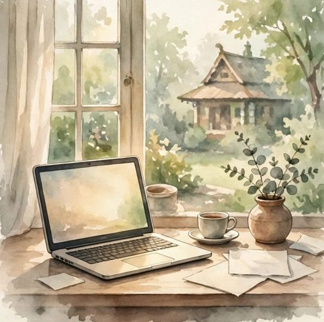
Стол у окна, ноутбук и тихий утренний свет — начало без спешки.
Начнём с простой и приятной мысли: вы уже умеете гораздо больше, чем принято думать. Если вы заходите в Facebook, находите там знакомых, читаете новости и отвечаете на сообщения, — у вас есть настоящий опыт работы в интернете. Это не мелочь и не случайность, а умение, которое складывалось постепенно, день за днём.
Иногда кажется, будто всё новое предназначено для молодых, а человеку старшего возраста остаётся только смотреть со стороны. Это неправда. Навык не измеряется возрастом: он измеряется тем, что человек умеет делать спокойно и без посторонней помощи.
На этой странице мы будем опираться именно на то, что у вас уже есть. Мы не станем начинать с нуля, потому что нуля нет. Есть ваш опыт, ваши привычки и ваше внимание — а это надёжный фундамент для любого нового дела.
2Запись на стене — это публикация
Раскрытая тетрадь и ручка рядом с ноутбуком — слова сначала рождаются на бумаге.
Когда вы пишете запись на своей стене в Facebook, вы публикуете текст. Слово «публикация» звучит солидно, почти как в газете, но суть именно такова: вы написали, нажали кнопку — и ваши слова стали доступны другим людям. Вы уже автор, пусть и без громкого звания.
Обратите внимание, как много вы при этом делаете сами. Вы выбираете слова, решаете, добавить ли фотографию, проверяете, не вышло ли слишком длинно или слишком коротко. Всё это — обычная работа человека, который готовит текст для читателя.
В вайб-кодинге начало очень похоже. Только вместо записи на стене в конце получится собственная страница, сделанная по вашему описанию. Но первый шаг — ваши слова — вам давно знаком.
3Комментарий — это обращение
Комментарий под чужой записью — это обращение к человеку. Вы не просто ставите слова в пустое место: вы говорите конкретному автору, что прочитали его, поняли и хотите ответить. Иногда это согласие, иногда вопрос, иногда добрая шутка.
У комментария есть адресат, и это важно. Вы умеете выбирать тон: одного человека поддержать, другого поправить мягко, третьему просто дать знать, что вы рядом. Такое чутьё не купишь и не выучишь за один вечер — оно приходит с жизнью.
Запомните это чувство адресата. Когда вы будете разговаривать с машиной, вы будете делать то же самое: обращаться с понятной просьбой и ждать ответа по существу.
4Отправить фотографию — значит передать файл
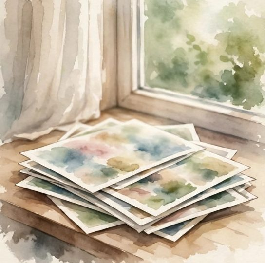
Напечатанные семейные фотографии у окна — снимки, которые хочется показать.
Когда вы отправляете фотографию внуку или подруге, происходит тихая техническая вещь: файл — так называют в компьютере любой готовый предмет, будь то снимок, письмо или картинка — переходит от вас к другому человеку. Вы делаете это легко, почти не задумываясь, и это прекрасно.
Вы выбираете нужный снимок среди многих, иногда поворачиваете его, иногда подписываете. Значит, вы умеете находить файл, смотреть на него внимательно и решать, подходит ли он. Это точная и аккуратная работа.
Позже, когда вы захотите поставить фотографию на собственную страницу, вам понадобится то же самое умение. Ничего нового учить не придётся — только применить знакомое действие в новом месте.
5Лайк — это обратная связь
Чашка чая и очки на газете — короткая пауза, чтобы оценить прочитанное.
Маленькое сердечко или поднятый палец под записью называют обратной связью. Это короткий способ сказать автору: «Я видел. Мне понравилось. Продолжайте». Без слов, одним движением, но смысл при этом совершенно ясный.
Вы пользуетесь обратной связью каждый день и, что важнее, умеете её читать. Когда вашу запись отметили, вы понимаете: её заметили, она пришлась к месту. Когда отметок нет, вы не обижаетесь, а просто делаете вывод.
В разговоре с машиной обратная связь будет вашими словами. Вы посмотрите на результат и скажете, что хорошо, а что стоит изменить. Это та же самая работа, только выраженная не сердечком, а фразой.
6Лента — это чтение в нужном порядке
Лента в Facebook — это длинный ряд записей, которые идут одна за другой в определённом порядке. Вы листаете её сверху вниз, останавливаетесь на интересном, пропускаете неважное. Так читали газеты, так читают и ленту — только бумагу заменил экран.
У этого чтения есть ваш собственный ритм. Вы умеете не тонуть в потоке: замечаете главное, откладываете лишнее, возвращаетесь к тому, что зацепило. Это навык внимательного читателя, и он дорогого стоит.
Страница, которую вы однажды сделаете сами, тоже будет читаться в порядке — сверху вниз, от заголовка к подробностям. Вы уже знаете, как такой порядок устроен, потому что каждый день читаете его у других.
7Личное сообщение — это письмо
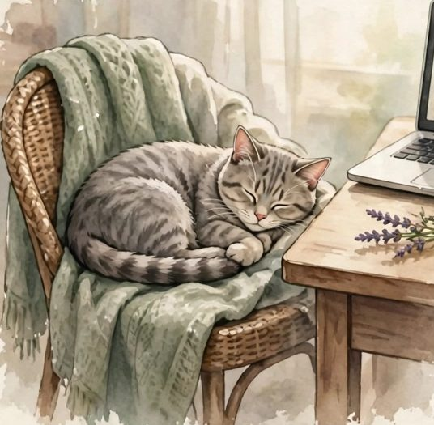
Кот спит на стуле рядом со столом — дома, спокойно, как при обычном письме.
Личное сообщение в Facebook — это письмо, только доходит оно быстро. У него есть начало, есть суть и есть человек, которому оно адресовано. Вы пишете «здравствуйте», излагаете дело и ждёте ответа — всё как в обычной переписке, которой вы владеете давно.
Письмо требует ясности. Вы сами знаете: если написать коротко и по делу, ответят быстрее и точнее. Если растечься, собеседник может не понять, чего именно вы хотите. Этот простой закон переписки вы усвоили на практике.
Разговор с машиной устроен как переписка. Вы пишете письмо-просьбу, получаете ответ, уточняете. Никакой особой науки здесь нет — есть только привычная вежливость и ясность.
8Группа по интересам — это клуб
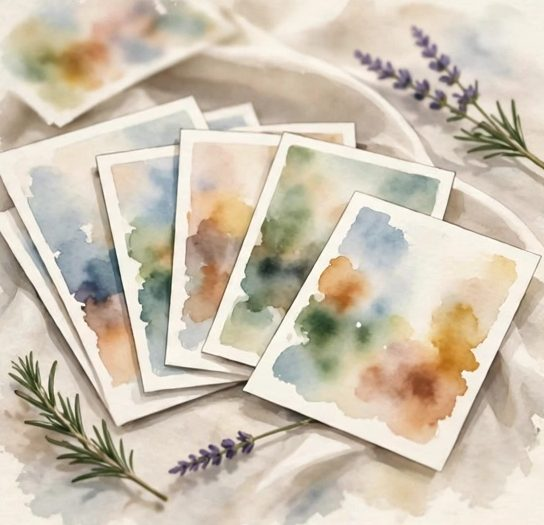
Фотографии, разложенные веером на скатерти, — как работы, показанные в своём клубе.
Группа в Facebook, где собираются любители вязания, садоводы или одноклассники, — это клуб. У клуба есть тема, есть свои люди и есть неписаные правила: о чём здесь говорят, а о чём не принято. Вы в таких клубах состоите и чувствуете себя в них уверенно.
В клубе вы умеете многое: задать вопрос знающим людям, показать свою работу, похвалить чужую. Вы знаете, что клуб держится не на стенах, а на общем интересе и доброжелательности участников.
Это понимание пригодится и здесь. Вокруг нового дела тоже собираются люди со своими страницами и советами, и вы сможете говорить с ними на равных — как равный участник клуба, а не как гость с краю.
9Вы умеете ждать ответа
Вы написали сообщение — и ответа нет. Проходит час, проходит вечер, и только наутро приходит пара тёплых строк. Вы не волнуетесь и не требуете немедленного ответа: вы умеете ждать, потому что жизнь научила, что у каждого свой день и свои заботы.
Это умение — редкое и ценное. Молодые часто нервничают из-за каждой минуты молчания, а вы знаете: молчание — не отказ, а просто пауза. Дело от паузы не портится.
С машиной ждать почти не придётся — она отвечает быстро. Но ваше спокойствие всё равно останется главным. Оно позволит не спешить, читать ответ внимательно и решать без суеты, что делать дальше.
10Вы умеете рассматривать фотографии
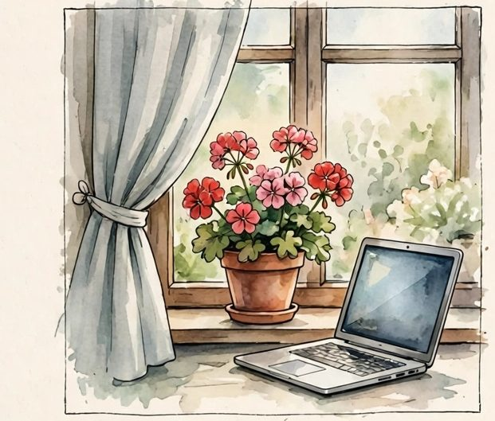
Окно, занавеска и герань на подоконнике — свет, в котором хорошо рассматривать снимки.
Откройте любой семейный альбом — и вы увидите, как внимательно вы рассматриваете фотографии. Вы замечаете лица, вспоминаете, где это было, поправляете: «Нет, это было не в том году, а раньше». Взгляд у вас наметан годами — натренирован самой жизнью, и точность его не в словах, а в самом взгляде.
Вы умеете сравнивать снимки и выбирать лучший. Один кадр темнее, другой светлее, на третьем все смотрят в камеру. Выбор даётся вам естественно, потому что вы знаете, что именно хотите сохранить.
Когда машина покажет вам готовую страницу, вы будете рассматривать её тем же взглядом. Что на месте, что лишнее, что стоит показать крупнее — вы увидите это сразу, и это будет самая важная часть работы.
11Опыт — это тоже умение
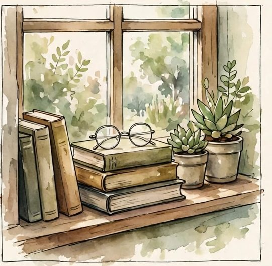
Книги и очки на подоконнике — опыт, который всегда под рукой.
Есть умения, которые не записаны ни в каких справках. Вы знаете, как объяснить сложное простыми словами, как успокоить человека, как понять по двум фразам, что собеседник устал. Это опыт, и он весит не меньше, чем любая техника.
Иногда про опыт говорят свысока, будто это просто прожитые годы. На деле опыт — это тысячи принятых решений и сделанных выводов. Пенсионер, который всю жизнь работал с людьми, понимает в разговоре больше, чем иной молодой специалист, — и это говорится спокойно, как факт.
В новом деле ваш опыт окажется главным инструментом. Машина умеет строить, но она не знает, что по-настоящему важно, тепло и нужно. Это знаете вы — и именно поэтому результат будет вашим, а не случайным.
12От умения — к изготовлению
До сих пор мы говорили о том, что вы умеете как читатель и собеседник: публиковать, комментировать, переписываться, рассматривать. Теперь сделаем один тихий шаг — от чтения к изготовлению, от чужой страницы к своей собственной.
Шаг этот меньше, чем кажется. Вы не меняете профессию и не становитесь другим человеком. Вы просто применяете знакомые действия в новом порядке: сначала описываете словами, потом смотрите, потом поправляете.
Дальше мы спокойно разберём, что такое вайб-кодинг и как он устроен. Без спешки, без сложных слов и без обещаний чудес. Только ясное объяснение — и ваше собственное решение, интересно ли вам это дело.
13Что такое вайб-кодинг — простыми словами
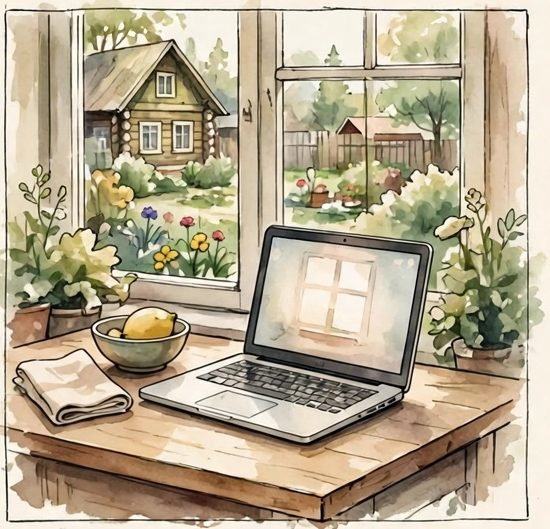
Ноутбук на кухонном столе, а за окном сад — замысел рождается дома.
Вайб-кодинг — это способ делать страницы и небольшие программы, разговаривая с машиной обычными словами. Вы не пишете непонятных команд и не учите специальных языков. Вы говорите, что хотите получить, а машина сама подбирает техническую часть.
Слово «вайб» пришло из молодёжного разговора и означает настроение, общее впечатление. В нашем деле смысл простой: вы передаёте замысел и настроение — «сделай спокойно, светло, про сад», — а машина воплощает это в готовой странице.
Представьте умелого помощника, которому вы объясняете задачу устно. Вы не обязаны знать, как он держит инструменты. Ваше дело — ясно сказать, что нужно, и принять работу, когда она готова.
14Подсказка: обычная фраза
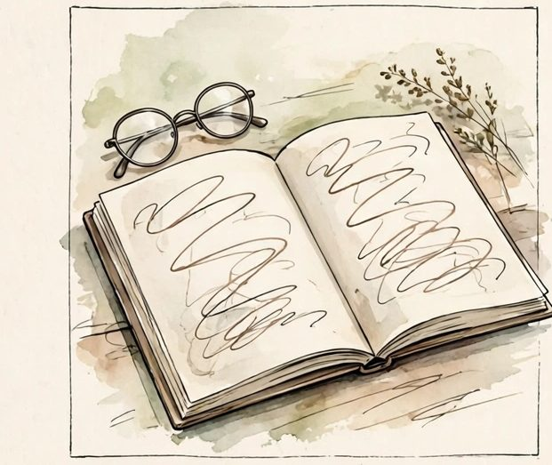
Раскрытый блокнот с крупными строками — подсказка начинается с обычной фразы.
Главное слово этого дела вводится сейчас, и вводится просто: подсказка — обычная фраза, которой вы объясняете машине, что нужно. Например: «Сделай страницу про мои розы, светлую, с большой фотографией наверху». Это и есть подсказка — ничего таинственного.
Подсказка не требует особых слов и правильного оформления. Она пишется так, как вы пишете сообщение знакомому человеку: своими словами, в своём порядке. Если что-то забыли — добавите следующим сообщением.
Всё дальнейшее — только практика в подсказках. Чем яснее вы рассказываете, тем точнее получается результат. Но ясность приходит постепенно, и первые фразы могут быть совсем простыми.
15Машина — исполнитель, вы — заказчик
В этом деле роли распределены ясно и справедливо. Машина — исполнитель: она быстра, усидчива и умеет техническую работу. Вы — заказчик: вы знаете, что нужно, зачем нужно и каким должен быть результат.
Заказчик не обязан уметь то, что умеет исполнитель. Когда вы заказываете шкаф столяру, вы не стоите у станка — вы объясняете размеры, выбираете дерево и принимаете готовую вещь. Здесь происходит то же самое, только исполнитель слушает вас через экран.
Поэтому последнее слово всегда остаётся за вами. Нравится — оставляем. Не нравится — просим переделать. Машина не спорит о вкусах: она выполняет, а решаете вы.
Канцелярия „Вайб-кодинг"
Одна канцелярия принимает всю переписку этой страницы: вопросы, рассказы о первых страницах, просьбы объяснить ещё раз и помедленнее. Письма читаются в порядке поступления, и на каждое стараются ответить.
16Страница: лист в интернете
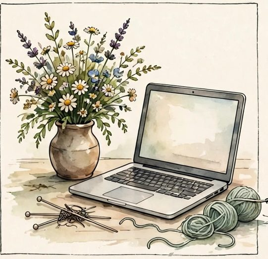
Ваза с полевыми цветами у ноутбука — один лист, а на нём — что-то своё.
Ещё одно слово, которое стоит объяснить спокойно: страница — это один лист в интернете, со своим текстом, фотографиями и адресом. Когда вы открываете новость или запись знакомого, вы смотрите именно страницу, хотя об этом обычно не задумываются.
У страницы есть верх и низ, заголовок и середина, начало и конец — как у листа бумаги, только лист этот показывает экран. Его можно читать, листать вниз и возвращать наверх.
Ваша первая работа будет именно страницей: одним листом про то, что вам дорого. Не большой системой и не сложным устройством, а одним понятным листом, который вы сможете показать близким.
17Сайт: несколько страниц под одной крышей
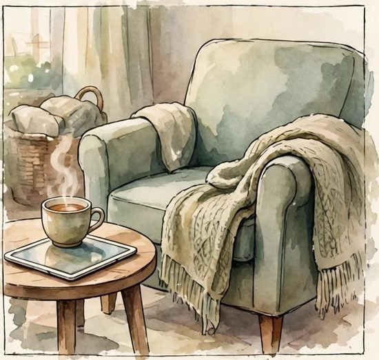
Кресло, плед и столик с чашкой — несколько уголков под одной крышей дома.
Если страниц несколько и они связаны между собой, их вместе называют сайтом. Сайт — это несколько страниц под одной крышей: у них общий адрес, общий вид и переходы друг к другу, как комнаты в одном доме.
Вы бываете на сайтах каждый день, даже если не называете их так. Новости, погода, расписание — всё это сайты, где одна страница ведёт к другой. Вы давно умеете в них ориентироваться: находить нужное и возвращаться назад.
Начинать с сайта не нужно. Сначала делается одна страница, а уж если захочется — к ней позже добавятся вторая и третья. Дом тоже строится не весь сразу, а по частям.
18Браузер: окно, через которое смотрят
Осталось третье простое слово: браузер — это программа-окно, через которое смотрят интернет. Когда вы нажимаете на знакомый значок и перед вами открывается Facebook, это работает браузер. Он показывает страницы, как окно показывает улицу.
У браузера есть строка наверху, куда вписывают адрес страницы. Есть стрелка «назад», которая возвращает к тому, что вы смотрели минуту назад. Вы пользуетесь этим окном каждый день, и оно вам уже подчиняется.
И страница, которую вы сделаете, тоже будет смотреться через браузер. То есть результат вашей работы увидят ровно так же, как вы сами видите чужие страницы сейчас.
19Вы говорите — машина делает
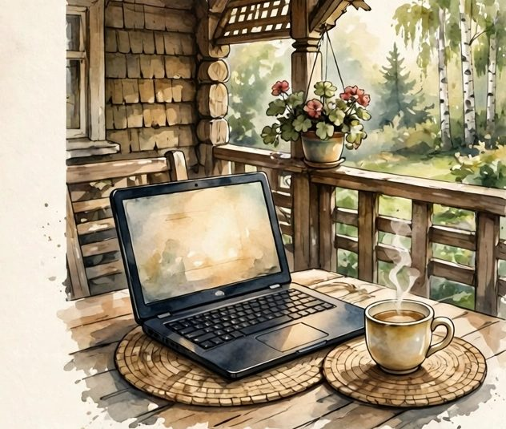
Ноутбук и чашка на веранде дачи — вы говорите, а дело делается неспешно.
Порядок работы здесь короткий и понятный: вы говорите — машина делает. Вы пишете подсказку своими словами, машина через короткое время показывает готовое, а вы смотрите и решаете, что дальше.
Не нужно делать всё за один раз. Сначала — общий вид, потом — подробности: заголовок покрупнее, фотографию другую, цвет поспокойнее. Каждая ваша фраза немного продвигает дело, как в обычном разговоре с мастером.
Если результат не похож на задуманное, это не провал, а часть работы. Вы просто говорите следующую фразу — и машина продолжает. Разговор, а не экзамен: вот главное, что стоит запомнить.
20Не код, а разговор
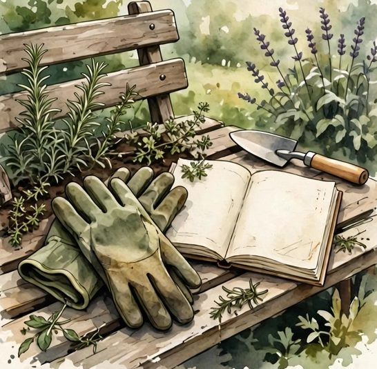
Садовые перчатки и тетрадь на скамейке — работа руками заменяется работой словом.
Раньше, чтобы сделать страницу, нужно было писать код — длинные строки специальных команд, где одна неверная буква ломала всё. Многие способные люди отступали именно здесь: дело казалось закрытым для непосвящённых.
Вайб-кодинг убирает эту стену. Код по-прежнему существует, но его пишет машина, а не вы. Ваша часть — разговор: рассказать, посмотреть, уточнить, одобрить или попросить иначе.
Поэтому не пугайтесь, если где-то встретится незнакомое техническое слово. В этой работе оно почти никогда не будет вашим заданием. Вашим заданием останутся слова — а словами вы владеете всю жизнь.
21Откуда машина знает слова
Естественный вопрос: откуда машина вообще знает, что такое «светлая страница» или «спокойный заголовок»? Ответ простой и без чудес: она прочитала очень много текстов, которые написали люди, и научилась понимать, как слова связаны друг с другом.
Она не думает, как человек, и не вспоминает, как вспоминаем мы. Она подбирает подходящее продолжение и подходящее решение, опираясь на всё прочитанное. Поэтому обычная человеческая речь ей понятна: именно на ней она и училась.
Из этого следует важное: говорить с ней нужно не командами, а как с человеком — полными фразами, с подробностями. Чем живее ваш рассказ, тем лучше она понимает задачу.
22Что машина умеет хорошо
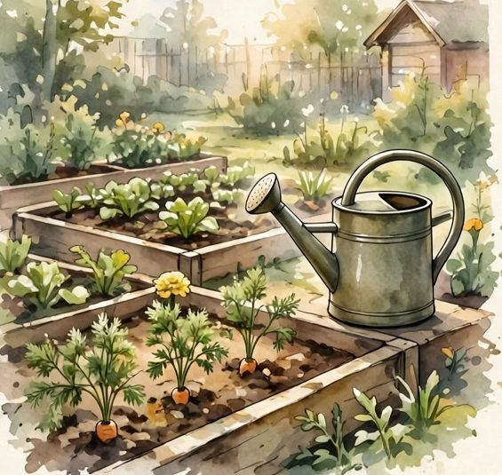
Лейка и грядки в утреннем свете — машина хороша там, где нужна аккуратная рутина.
Машина умеет многое из того, что человеку даётся медленно. Она быстро собирает страницу, аккуратно расставляет текст и фотографии, подбирает размеры и цвета и не устаёт переделывать одно и то же место десять раз подряд.
Она хороша там, где нужна усидчивость и точность исполнения. Попросите изменить все заголовки сразу или перенести фотографию вниз — она сделает это ровно и без ворчания. Рутинная часть работы — её стихия.
При этом она охотно предлагает варианты. Не знаете, как назвать страницу или каким сделать первый абзац, — спросите, и она предложит несколько на выбор. Выбирать всё равно будете вы, но начать с чужого варианта иногда легче, чем с чистого листа.
23Чего машина не умеет
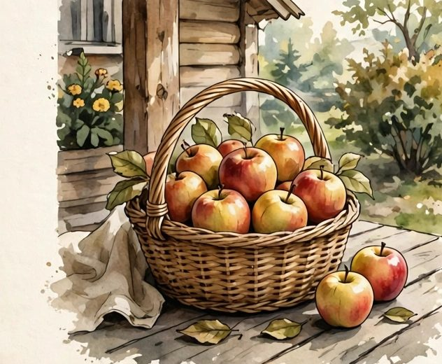
Корзина с яблоками на крыльце — то, что знает только тот, кто сам собирал урожай.
Честности ради скажем и об обратном. Машина не знает вашей жизни: она не видела ваш сад, не знакома с вашими внуками и не помнит, как пахнет варенье на вашей кухне. Всё это в работу приносите только вы.
Она также может ошибаться и иногда предлагает не то — красиво, но не по существу. Поэтому её работу всегда стоит проверять глазами и здравым смыслом, как проверяют работу любого исполнителя.
И главное: у неё нет вкуса и нет замысла. Замысел — что делать и зачем — рождается у человека. Машина сильна руками, если можно так сказать, а голова в этом деле — вы.
24Главное слово — «хочу»
Если из всего этого зала запомнится одно слово, пусть это будет слово «хочу». Вся работа начинается с него: «Хочу страницу про наш дом. Хочу, чтобы было светло и спокойно. Хочу показать фотографии детям, которые живут далеко».
Слово «хочу» не требует оправданий и разрешений. Не нужно, чтобы замысел был большим или полезным для всего мира. Достаточно, чтобы он был вашим и чтобы вам самой — или самому — было интересно довести его до конца.
Дальше мы поговорим о страхе, который иногда встаёт между «хочу» и первым шагом. Забегая вперёд, скажем главное: бояться здесь нечего, и следующий зал целиком посвящён тому, почему это так.
25Здесь ничего нельзя сломать
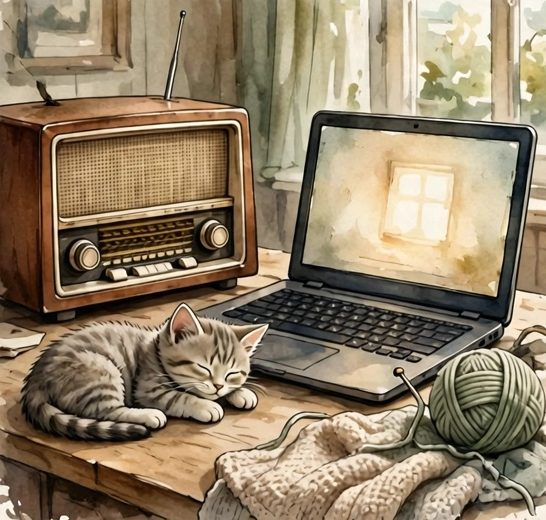
Старый радиоприёмник и ноутбук на одном столе — новое рядом со знакомым, и ничего не ломается.
Начнём с самого успокаивающего факта: здесь ничего нельзя сломать. Что бы вы ни написали машине, ваш компьютер не испортится, ваши фотографии не исчезнут, а Facebook не пострадает. Разговор с машиной — это разговор, а не работа с хрупким механизмом.
Многие боятся нажать «не туда» — этот страх знаком каждому, кто осваивал телефон или банкомат. Но в нашем деле «не туда» почти не существует: самое худшее, что может случиться, — получится не та страница, которую вы хотели. А это, как мы увидим, легко поправляется.
Запомните эту мысль как опору. Вы работаете не с порохом и не со стеклом, а со словами и картинками на экране. Слова можно переписать, картинку можно заменить — и ничего необратимого при этом не произойдёт.
26Всё можно переделать
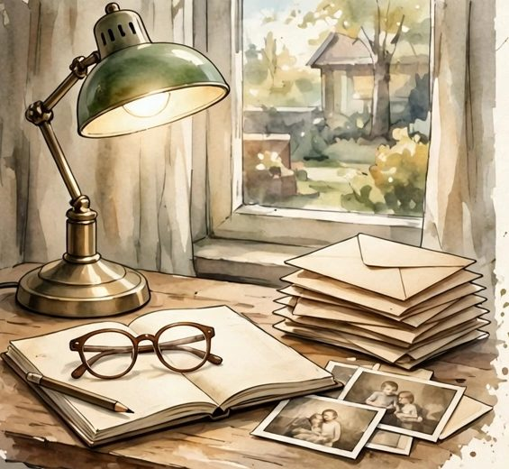
Настольная лампа, очки и стопка писем — всё можно перечитать и переписать заново.
Всё, что сделает машина по вашей подсказке, можно переделать. Не понравился цвет — скажите другой. Заголовок вышел длинным — попросите короче. Фотография не на месте — её можно убрать или заменить в любой момент.
Это не похоже на письмо, отправленное по почте, которое уже не вернёшь. Страница до тех пор, пока вы сами не решите иначе, остаётся черновиком в ваших руках. Вы можете возвращаться к ней сегодня, завтра и через неделю.
Поэтому не нужно стараться сказать всё идеально с первого раза. Скажите примерно, посмотрите, поправьте. Именно так, постепенно, и делается любая хорошая вещь — от пирога до сада.
27Кнопка «назад» и слово «отмени»
В браузере — окне, через которое смотрят интернет, — есть стрелка «назад». Она возвращает вас к тому, что было на экране минуту назад. Эта маленькая стрелка выручала каждого, и она всегда на месте, что бы ни происходило.
А в разговоре с машиной работает простое слово «отмени». Написали лишнее, передумали, захотели начать абзац сначала — скажите «отмени это» или «давай вернём, как было», и машина послушно вернётся назад.
Пока у человека есть «назад» и «отмени», он не может окончательно заплутать. Вы не обязаны помнить все ходы наперёд — достаточно знать, что обратный путь существует всегда.
28Никто не смотрит и не ставит отметок
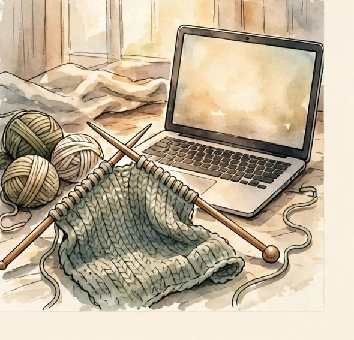
Вязание со спицами рядом с ноутбуком — работа, которую никто не оценивает, кроме вас самих.
Важное обстоятельство: за вашей работой никто не наблюдает. Нет учителя за спиной, нет журнала с отметками, нет соседки, которая скажет, что у неё получилось быстрее. Есть вы, экран и ваше собственное дело.
Первые страницы вообще никто не увидит, кроме вас. Вы покажете их только тогда, когда сами решите, что готово. А до этого момента можно пробовать, ошибаться и начинать заново совершенно свободно.
Отсутствие зрителей — не одиночество, а свобода. Многие вещи в жизни мы делаем лучше именно тогда, когда никто не торопит и не оценивает. Это дело — из таких.
29Опечатка — не беда
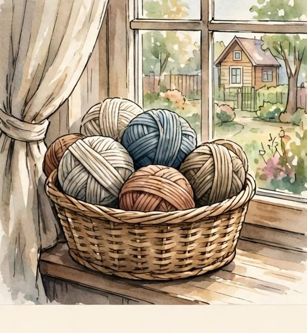
Клубки пряжи в корзине у окна — распутать одну нитку не значит испортить всё вязание.
Случится непременно: вы напечатаете слово с ошибкой, пропустите букву или поставите запятую не туда. Спешим успокоить — ничего страшного не произойдёт. Машина понимает речь с опечатками примерно так же, как человек понимает письмо с опиской: по смыслу.
Если же ошибка попадёт в текст вашей страницы, её всегда можно исправить одним сообщением: «Там опечатка, поправь, пожалуйста». Машина поправит и не сделает замечания — замечания вообще не входят в её работу.
Относитесь к опечатке как к крошке на столе: заметили — убрали, и разговор продолжается. Ни одна хорошая страница ещё не погибла из-за одной буквы.
30Машина не устаёт и не сердится
У машины нет настроения, и в нашем случае это достоинство. Она не устаёт от вопросов, не вздыхает, если вы переспрашиваете третий раз, и не обижается на замечания. Сколько бы раз вы ни попросили объяснить ещё раз — ответ будет таким же ровным.
Помните, каково бывает просить о помощи занятого человека: неловко отвлекать, страшно показаться непонятливым. С машиной этой неловкости нет вовсе. Спрашивать можно медленно, подробно и в любое время дня.
Пользуйтесь этим спокойно. Задавайте вопросы в том порядке, в каком они приходят в голову. Терпение машины бесконечно, а значит, темп разговора задаёте только вы.
Канцелярия „Вайб-кодинг"
Одна канцелярия принимает всю переписку этой страницы: вопросы, рассказы о первых страницах, просьбы объяснить ещё раз и помедленнее. Письма читаются в порядке поступления, и на каждое стараются ответить.
31Страшное слово «ошибка»
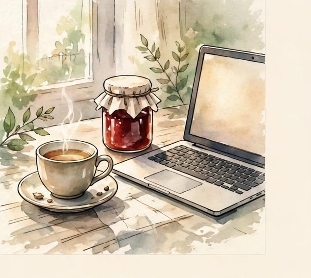
Чашка, блюдце и банка варенья на столе — пауза, после которой можно попробовать ещё раз.
Иногда на экране появляется слово «ошибка» — и сердце невольно сжимается, будто случилось что-то непоправимое. На деле «ошибка» в мире машин значит всего лишь: «Здесь не получилось, попробуй иначе». Это не приговор, а подсказка о следующем шаге.
Такие сообщения появляются у всех — и у молодых, и у опытных, и у тех, кто работает с машинами всю жизнь. Разница лишь в том, что опытный человек не пугается красного текста, а читает его и делает ещё одну попытку.
Если слово «ошибка» встретится вам, поступите просто: не закрывайте всё в растерянности, а напишите машине, что именно вы видите на экране. Она объяснит, в чём дело, обычными словами — и вы вместе пойдёте дальше.
32Черновик — законное состояние
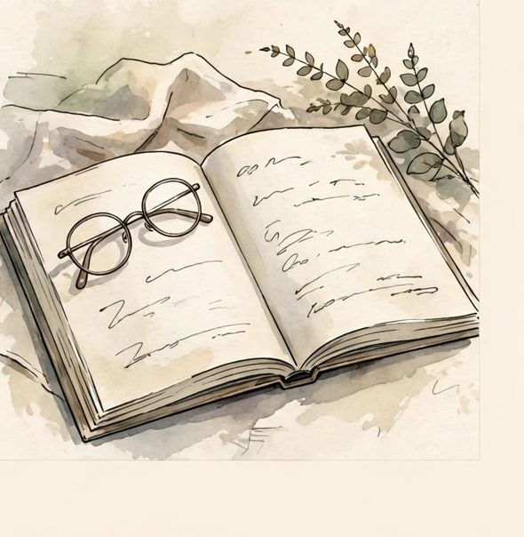
Раскрытая книга рецептов и очки — сначала пробуют, потом записывают начисто.
В школе черновик считали чем-то второсортным: вот чистовик — дело, а черновик — так, подготовка. В нашем деле всё наоборот: черновик — законное и долгое состояние работы. Страница может жить в черновике неделями, и это совершенно нормально.
Писатели переписывают главы, садоводы пересаживают грядки, вязальщицы распускают ряды. Никто не ждёт, что с первого раза получится окончательно. Черновик — это не неудача, а способ спокойно дойти до хорошего результата.
Разрешите своей странице быть несовершенной. Сегодня — набросок, завтра — чуть лучше, через неделю — то, что не стыдно показать. Никакой срок над вами не висит.
33Ваш компьютер останется вашим
Отдельно скажем о том, что тревожит многих: не случится ли чего с самим компьютером и с тем, что в нём хранится. Нет. Разговор с машиной идёт через браузер, как обычный визит на знакомый сайт, и не меняет устройства вашего компьютера.
Ваши фотографии, письма и записи останутся ровно там, где были. Вы сами решаете, что показать машине, а что не показывать, — точно так же, как сами решаете, какую фотографию отправить знакомому, а какую оставить в альбоме.
И ещё одно: вы всегда можете просто закрыть окно и закончить на этом день. Никаких обязательств продолжение не требует. Компьютер выключится так же спокойно, как выключался всегда.
34Спокойствие — часть метода
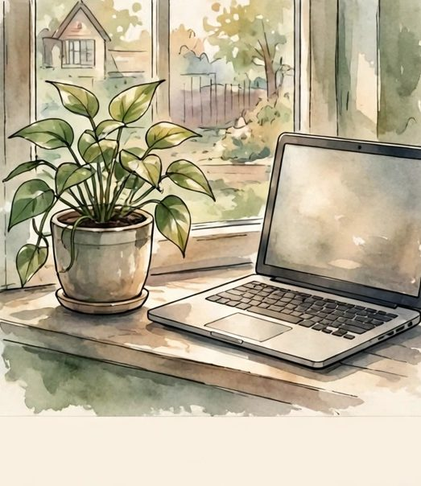
Комнатный цветок на подоконнике, а ноутбук в мягкой тени — спокойствие как часть работы.
В этом деле спокойствие — не просто приятное состояние, а часть метода. Спешка портит подсказки: в суете забываются подробности, а слова выходят сбивчивыми. Неспешный разговор, напротив, даёт точный результат.
Поэтому устройте работу по-домашнему: удобный стул, хорошее освещение, чашка чая рядом. Не ставьте себе норму «успеть за вечер». Один маленький шаг в день — прекрасный темп, проверенный любым долгим ремеслом.
Если почувствовали усталость или раздражение — закройте окно и отдохните. Дело подождёт, не убежит и не испортится. Завтра вы вернётесь к нему со свежим взглядом, и это будет только на пользу.
35Вопрос «а вдруг»
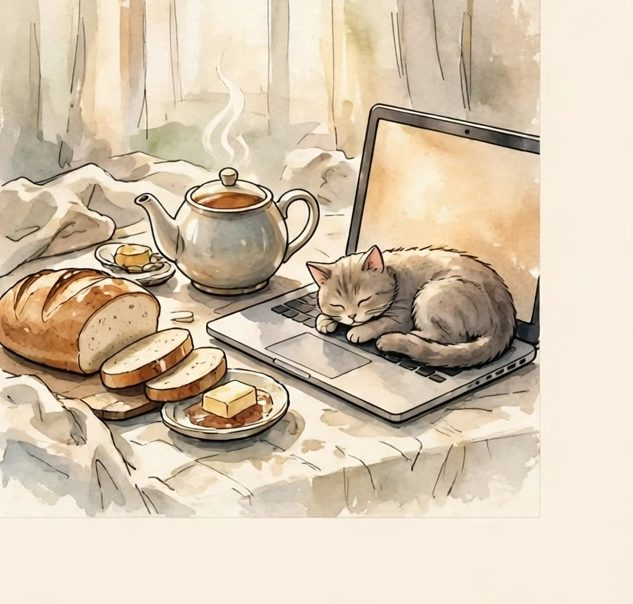
Утренний стол: хлеб, чайник и ноутбук в стороне — вопрос «а вдруг» решается за чаем.
Почти у каждого перед новым делом в голове крутится вопрос: «А вдруг не получится? А вдруг я что-то испорчу? А вдруг это не для меня?» Вопрос этот естественный — он приходит не от слабости, а от привычки относиться к делу серьёзно.
Давайте ответим на него честно. Испортить здесь нечего — об этом уже сказано. Не получиться с первого раза может, но это значит лишь «получится со второго или с третьего». А «не для меня» проверяется только одним способом — попробовать маленькое и посмотреть на свои ощущения.
Заметьте: попробовать — не значит обязаться. Вы вправе сделать одну страницу, решить, что дело не по душе, и спокойно закрыть тему. Но узнать это можно только из опыта, а не из страха перед ним.
36Страх уходит после первого шага
Есть тихая закономерность, которую знает каждый, кто начинал новое в зрелом возрасте: страх живёт только до первого шага. Пока дело не начато, оно кажется огромным и чужим. Стоит сделать самое малое — и оно становится обычным занятием, со своими понятными движениями.
Так было с первой записью в Facebook, с первым сообщением, с первой отправленной фотографией. Тогда тоже было неловко, а теперь вы делаете это не задумываясь. С этим делом будет так же — просто дайте ему то же время, что когда-то дали тому.
В следующем зале мы сделаем этот первый шаг вместе, медленно и по порядку: где находится машина, как открыть разговор и какой фразой его начать. Ничего сложного впереди нет — есть только начало.
37Где живёт машина
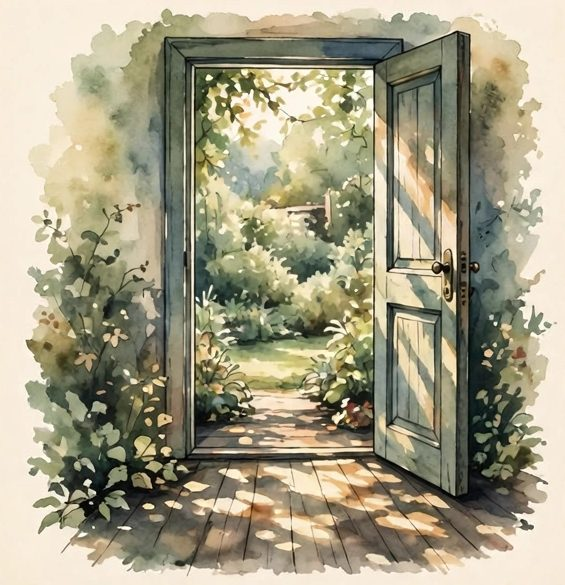
Приоткрытая дверь в сад и свет на половицах — разговор приходит в дом тихо.
Начнём с простого вопроса: где находится та машина, с которой предстоит разговаривать? Она живёт не в вашем компьютере и не в какой-то секретной комнате. Она находится далеко, в больших машинных залах, а к вам приходит через интернет — так же, как к вам приходит Facebook.
Для разговора вам не нужно ничего устанавливать и ничего покупать. Достаточно открыть браузер — окно, через которое смотрят интернет, — и перейти по адресу страницы, где ведётся такой разговор. Адрес вписывается в верхнюю строку браузера, как адрес любого знакомого сайта.
Представьте телефонный разговор: собеседник далеко, но голос рядом, и расстояние не мешает делу. Здесь так же: машина далеко, а разговор происходит у вас дома, за вашим столом, в удобное для вас время.
38Как открыть разговор
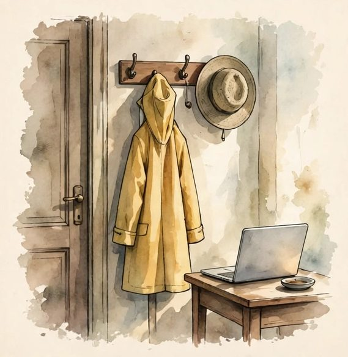
Вешалка с плащом у двери и столик с ноутбуком — вошли, освоились, можно начинать.
Открыть разговор несложно, и делается это в несколько спокойных движений. Сначала откройте браузер привычным способом — тем же значком, что открывает Facebook. Затем впишите в верхнюю строку адрес страницы разговора и нажмите клавишу ввода.
Через несколько секунд перед вами появится чистое поле для текста и место, куда машина будет писать ответы. Это похоже на окно переписки в Facebook: внизу — строка, где пишете вы, выше — вся беседа целиком.
Не торопитесь сразу что-то заказывать. Сначала просто посмотрите на экран, освоитесь, почитайте, что там написано. Разговор никуда не убегает: поле подождёт, пока вы нальёте чаю и усядетесь поудобнее.
39Поздоровайтесь
Первая фраза разговора может быть самой обычной: поздоровайтесь. Напишите «Здравствуйте» — и машина ответит приветствием. Это не обязательное правило, а просто хороший, привычный тон, с которого начинается любая вежливая беседа.
Поздороваться полезно и для собственного спокойствия. Знакомое начало снимает ощущение, будто вы стоите перед чем-то чужим и холодным. Разговор пошёл — значит, дело уже началось, и начался он с ваших слов.
Машина отвечает на приветствие коротко и дружелюбно и обычно спрашивает, чем может помочь. Вот тут и наступает момент для главного — для вашей первой настоящей фразы о том, что вы хотите сделать.
40Первая фраза
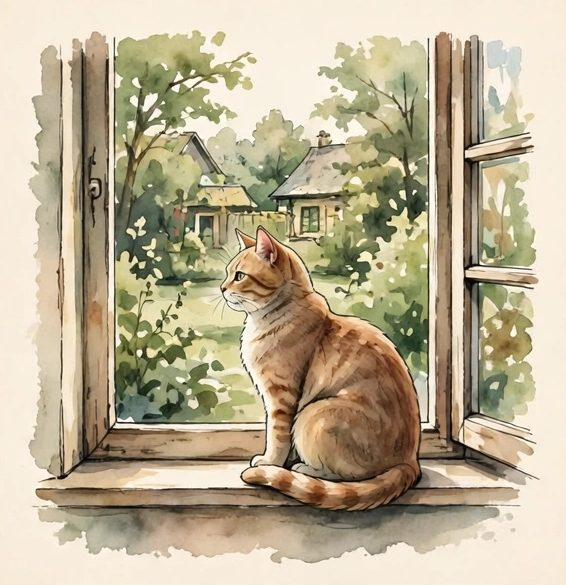
Кот на подоконнике смотрит в сад — первая фраза сказана, дальше будет легче.
Первая фраза не должна быть совершенной — она должна быть просто вашей. Например: «Здравствуйте. Я хочу сделать страницу про наш сад». Или ещё проще: «Хочу страницу с фотографиями кота». Коротко, честно и по существу — этого достаточно для начала.
Не старайтесь вложить в первую фразу всё сразу: и цвета, и размеры, и все подробности. Разговор на то и разговор, что подробности добавляются постепенно, в следующих фразах, когда вы увидите первый результат и поймёте, чего не хватает.
Напишите фразу, перечитайте её один раз — и отправляйте. В следующем зале мы подробно разберём, как рассказывать машине о своём замысле своими словами. А пока запомните главное ощущение этого момента: вы начали — и ничего страшного не произошло.
41Говорите, как с человеком
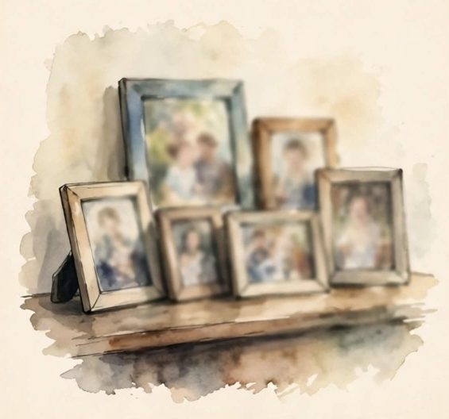
Семейные фотографии в рамках на стене над столом, где идёт тихий разговор.
Разговор с машиной не требует особой подготовки. Вы пишете так, как писали бы письмо или записку: своими словами, в обычном порядке, без спешки. Если фраза получилась неловкой, машина всё равно постарается понять её смысл.
Не нужно придумывать вежливые формулы, но и грубость ни к чему. Спокойный тон, к которому вы привыкли в жизни, здесь вполне уместен. Вы говорите — машина слушает; вы уточняете — она отвечает точнее.
Представьте, что напротив сидит внимательный собеседник, который не торопит и не перебивает. Именно так и стоит вести этот разговор: по-человечески, фраза за фразой.
42Не нужно специальных слов
Многие опасаются, что для разговора с машиной нужны особые команды, которые следует заучить наизусть. Это не так. Никакого тайного словаря здесь нет, и выучивать его не придётся.
Достаточно обычной речи: «сделайте», «покажите», «напишите», «помогите разобраться». Машина понимает просьбу, выраженную просто и ясно, лучше, чем набор заученных выражений.
Если какое-то слово покажется вам незнакомым, не останавливайтесь из-за него. Спросите прямо, что оно значит, и продолжайте своими словами — они здесь главные.
43Машина отвечает текстом
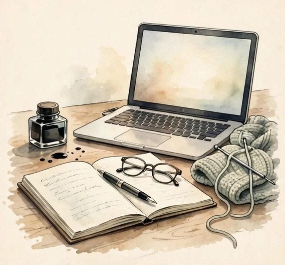
Письменный стол, бумага и ноутбук — ответ приходит словами и никуда не торопится.
На вашу фразу машина отвечает тоже текстом — словами на экране, которые можно читать в своём темпе. Ответ не исчезает через секунду и не требует немедленной реакции. Он остаётся перед глазами, пока вы его рассматриваете.
Читать ответ можно так же, как читают письмо: сначала целиком, затем — те места, что вызвали вопрос. Если что-то осталось неясным, выделите это место в своём следующем сообщении и попросите объяснить проще.
Иногда ответ бывает длинным, иногда — коротким. И то и другое нормально. Главное, что разговор идёт письменно, а письменное слово всегда можно перечитать.
44Можно задавать вопросы
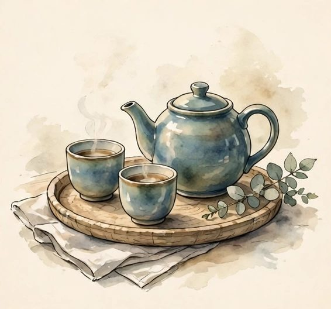
Чайник и две чашки на подносе — разговор, в котором есть место вопросам.
Разговор с машиной — не экзамен, где вопросы задают только вам. Спрашивать здесь можно и нужно: о том, что непонятно, о том, что хочется уточнить, о том, что машина только что сделала.
Вопрос может быть совсем простым: «Что это значит?», «Почему получилось так?», «А можно иначе?». На такие вопросы машина отвечает охотно и подробно, не удивляясь и не раздражаясь.
Задавайте вопросы по одному, дожидайтесь ответа и идите дальше. Так, шаг за шагом, из отдельных вопросов складывается ясное понимание целого дела.
45Пауза — это нормально
В разговоре с машиной не нужно отвечать сразу. Можно отложить чтение, встать, налить чаю, посмотреть в окно и вернуться к экрану через час или через день. Машина не обидится на молчание и не забудет, о чём шла речь.
Пауза часто помогает больше, чем спешка. Отдохнув, человек яснее видит, что именно он хочет сказать дальше и какое слово стоит поправить.
Поэтому не торопите себя. Тишина между фразами — такая же часть разговора, как и сами фразы, и она принадлежит только вам.
Канцелярия „Вайб-кодинг"
Одна канцелярия принимает всю переписку этой страницы: вопросы, рассказы о первых страницах, просьбы объяснить ещё раз и помедленнее. Письма читаются в порядке поступления, и на каждое стараются ответить.
46Если ответ длинный
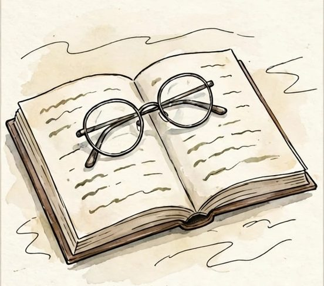
Очки лежат на раскрытой книге — длинное читают не спеша, с остановками.
Иногда машина отвечает длинно: объясняет обстоятельно, с подробностями и примерами. Не пугайтесь объёма. Длинный ответ не означает, что от вас ждут столь же длинного ответа в ответ.
Прочитайте его не спеша, как читают газетную статью: можно остановиться на середине, можно вернуться к началу. Если главное потерялось среди подробностей, напишите коротко: «Скажите то же самое, но короче и проще».
Можно попросить и наоборот — рассказать только об одном месте подробнее, а остальное пока оставить. Вы управляете разговором, а не он вами.
47Завершить разговор — просто закрыть окно
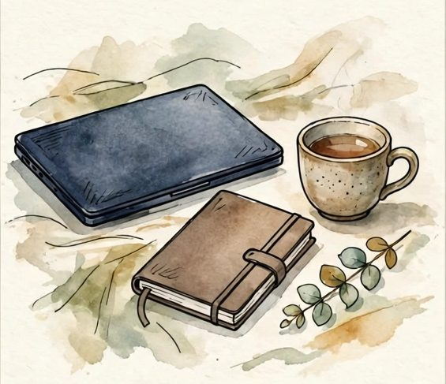
Ноутбук закрыт, рядом тетрадь и чашка — разговор окончен, наступил отдых.
Завершить разговор проще, чем кажется. Не нужно искать особую кнопку прощания и не нужно предупреждать заранее. Достаточно закрыть окно на экране — так же, как вы закрываете прочитанную страницу в интернете.
Браузер — это окно, через которое вы смотрите в интернет и разговариваете с машиной; закрыв его, вы просто заканчиваете сегодняшний разговор. Ничего при этом не ломается и не пропадает бесследно.
Если хочется, можно перед закрытием коротко попрощаться или поблагодарить — по привычке, по-человечески. Но и без этого разговор будет завершён аккуратно и спокойно.
48Разговор можно продолжить завтра
Сегодняшний разговор не обязан заканчиваться готовым делом. Его можно прервать на середине мысли и продолжить завтра, послезавтра или на следующей неделе — когда будет время и настроение.
Вернувшись, просто напомните в первой фразе, о чём шла речь: «Вчера мы делали страницу про сад, давайте продолжим». Одного такого напоминания обычно достаточно, чтобы разговор снова пошёл по прежнему руслу.
В этом — тихое удобство такого общения. Оно подстраивается под ваш день, а не требует, чтобы день подстраивался под него.
49Подсказка — это просто рассказ
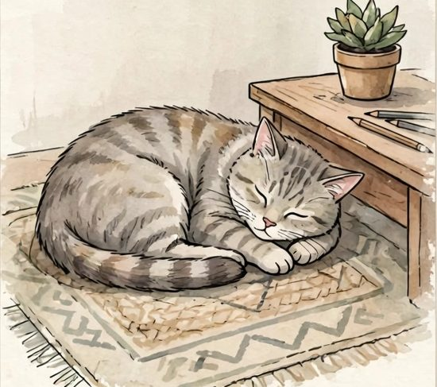
Кот спит, свернувшись на коврике у стола, пока рождается первый рассказ о замысле.
Подсказка — это обычная фраза, которой вы объясняете машине, что вам нужно. Не команда из учебника и не заклинание, а короткий рассказ о том, что должно получиться в итоге.
Рассказ этот пишется так, как вы рассказывали бы о своём замысле человеку: что это будет, для кого и каким вы это видите. Чем яснее рассказ, тем точнее машина поймёт задачу.
Не бойтесь, что подсказка получится несовершенной с первого раза. Её всегда можно дополнить следующей фразой — разговор для того и существует.
50Как вы рассказываете внуку
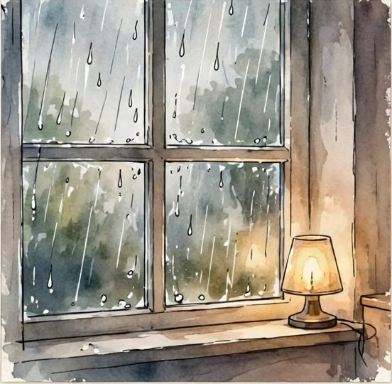
Окно в дождь, а внутри — тёплый свет лампы и неспешный рассказ.
Вспомните, как вы объясняете что-нибудь внуку или соседке за чаем. Вы не начинаете с правил — вы начинаете с главного: что случилось, что нужно и что должно выйти в конце.
Точно так строится и подсказка для машины. Сначала — суть дела одним предложением, затем — подробности, которые сами придут в голову по ходу рассказа.
Если вы умеете рассказать человеку так, чтобы он понял и сделал, вы уже умеете обращаться и с машиной. Разница лишь в том, что собеседник на этот раз слушает особенно внимательно и ничего не пропускает мимо ушей.
51Пример: страница про кота
Вот подсказка, написанная целиком, обычными словами: «Сделайте, пожалуйста, страницу про моего кота Барсика. Вверху пусть будет его имя крупными буквами, а под ним — короткий рассказ о том, как он появился в нашем доме».
Продолжить можно так: «Дальше напишите, что он любит спать на подоконнике и встречать меня у двери. В конце добавьте место для фотографии, я пришлю её позже. Пусть страница будет тёплой и спокойной, без ярких красок».
Заметьте: здесь нет ни одного специального слова. Есть только ясный рассказ о коте, о странице и о том настроении, которое хочется сохранить.
52Пример: страница про огород
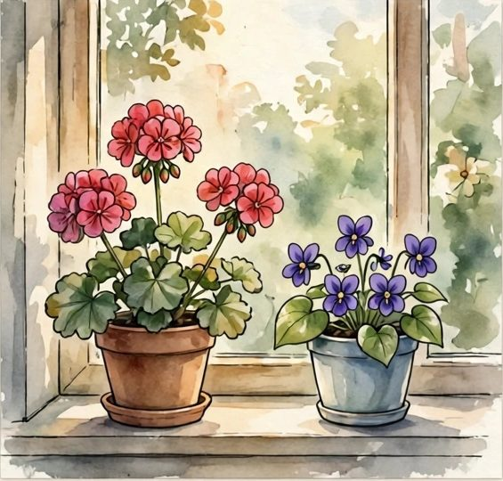
Герань и фиалки на окне в утреннем солнце — страница про огород начинается с рассказа.
Другой пример — для тех, чьё лето проходит между грядками: «Сделайте страницу про мой огород. Напишите, что я выращиваю помидоры, огурцы и зелень, а в августе собираю яблоки».
Подробности добавят странице жизни: «Отдельно напишите про теплицу и про то, когда я сею рассаду — в марте, на южном окне. Добавьте список: что посажено в этом году, чтобы я могла отмечать, что уже взошло».
Такая подсказка понятна без объяснений, потому что она написана так, как человек рассказывает о своём огороде соседу — по порядку и с любовью к делу.
53Пример: семейный альбом
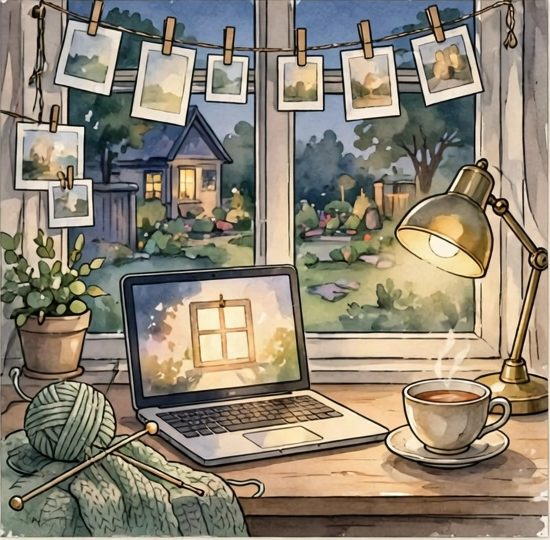
Стол у окна вечером, лампа и чай — семейный альбом собирают не за один вечер.
Третий пример — самый домашний: «Сделайте страницу-альбом нашей семьи. В начале пусть будет фотография дома, в котором мы жили, а под ней — несколько строк о том, когда он был построен».
Дальше подсказка может идти по годам: «Затем добавьте разделы: свадьба, дети, внуки. Под каждой фотографией оставьте место для подписи — кто на ней и какой это год. Я буду заполнять подписи постепенно, не за один день».
Машина сделает каркас такого альбома по вашему рассказу, а наполнять его воспоминаниями будете вы сами — в том порядке и с той обстоятельностью, какие сочтёте нужными.
54Подробности помогают
Одна и та же просьба может прозвучать скупо и подробно. Скупо: «Сделайте страницу про сад». Подробно: «Сделайте страницу про сад, где растут яблони и смородина, а у забора — малина». Вторая подсказка даст машине гораздо больше опоры.
Подробности — это не украшение, а точные указания. Назовите имена, места, годы и привычки — всё то, что знаете только вы. Машина не догадается о них сама, но бережно использует каждое названное вами слово.
При этом не нужно стараться вспомнить всё сразу. Начните с главного, посмотрите, что получилось, и добавьте недостающее следующей фразой.
55Цвет, размер, настроение
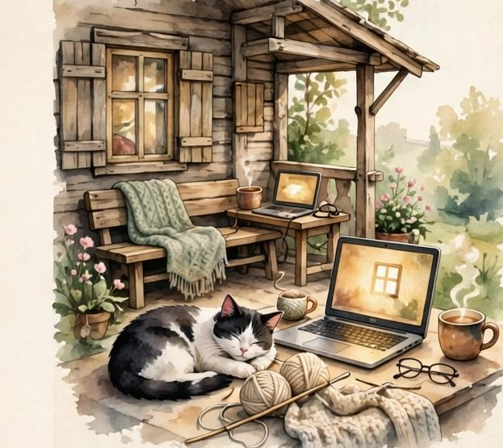
Дачный дом и крыльцо в дневном свете — цвет и настроение называют своими словами.
Помимо слов о содержании, машине помогают слова о виде и ощущении страницы. Скажите, каким должен быть цвет: спокойным, светлым, как утреннее небо, или тёплым, как дерево. Скажите, каким должен быть шрифт — так здесь называют начертание букв: крупным, чтобы читать без напряжения.
Можно назвать и настроение: «Пусть страница будет тихой, как библиотека», или: «Пусть будет веселее, как семейный праздник». Такие сравнения машина понимает хорошо, потому что они задают не украшение, а характер.
Если вы не знаете, как назвать желаемое, опишите, на что оно похоже. Образ, взятый из жизни, часто точнее любого специального слова.
56Чего вы не хотите — тоже скажите
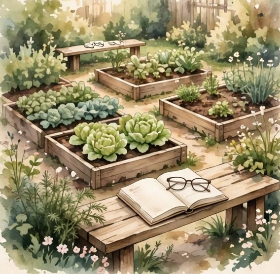
Грядки с зеленью и тетрадь на скамейке — лишнее убирают сразу, ещё на словах.
Подсказка становится точнее, когда в ней сказано не только о желаемом, но и о нежелательном. Если вам не нужны яркие краски, мигающие надписи или длинные вступления, напишите об этом прямо: «Без ярких красок и без лишних украшений».
Такие слова не обидят машину и не испортят разговор. Напротив, они сразу очерчивают границы, внутри которых ей следует работать, и избавляют вас от лишних исправлений потом.
Говорите о нежелательном так же спокойно, как о желаемом. Одно короткое «не надо» в подсказке порой значит больше, чем целый абзац похвалы после.
57Одна просьба за один раз
Старайтесь в одной фразе просить об одном деле. Не «сделайте страницу, добавьте фотографию, измените цвет и напишите стихи», а сначала — только страница. Когда она будет готова, следующей фразой попросите о фотографии.
Так проще и вам, и машине. Вы видите результат каждого шага отдельно и сразу замечаете, где нужно поправить, а машина не путается между несколькими задачами сразу.
Несколько маленьких просьб, сказанных по очереди, приводят к цели вернее, чем одна большая, сказанная залпом.
58Короткая подсказка и длинная
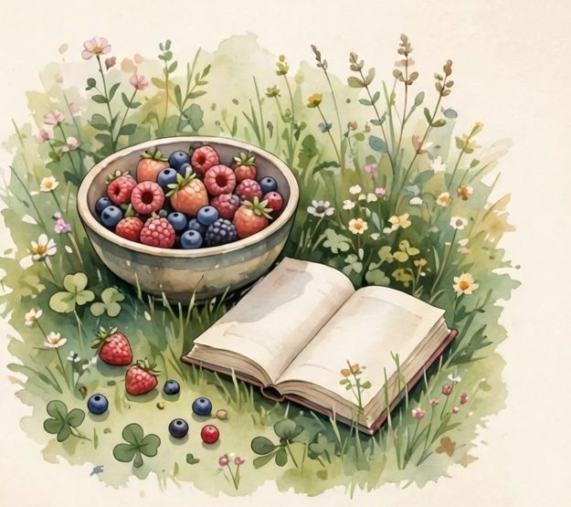
Таз с ягодами и книга на траве — короткий рассказ и длинный одинаково хороши.
Подсказка может состоять из одного предложения: «Сделайте страницу про мою улицу». Этого достаточно, чтобы начать. Машина сделает первый вариант, а вы, глядя на него, поймёте, чего не хватает.
Длинная подсказка — на абзац или два — уместна, когда замысел уже сложился в голове и хочется передать его целиком. Она даёт более точный первый результат, но требует чуть больше времени на сочинение.
Ни короткая, ни длинная подсказка не лучше другой сама по себе. Выбирайте ту длину, которая удобна вам сегодня: начать можно коротко, а продолжить — подробно.
59Ваши слова — ваш почерк
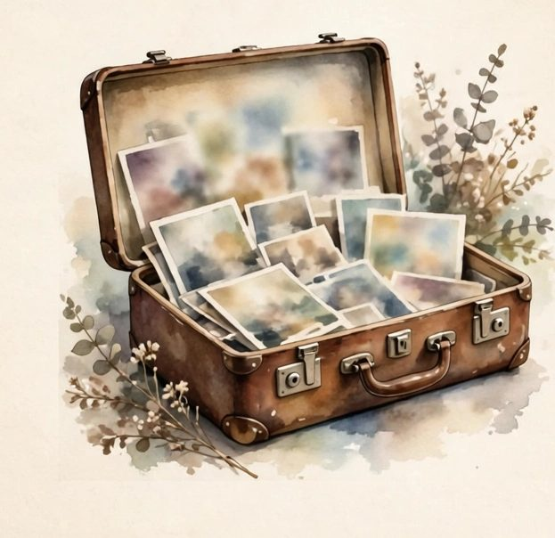
Старый чемодан с фотографиями приоткрыт — у каждого рассказа свой, неповторимый почерк.
Не старайтесь писать подсказки «как принято» или «как у других». Ваши собственные слова, ваш порядок мыслей и ваши сравнения — это и есть ваш почерк, и именно он делает будущую страницу вашей, а не чужой.
Машина не оценивает стиль и не сравнивает вас с соседями по интернету. Она одинаково внимательно читает и короткую записку, и обстоятельный рассказ, сохраняя то настроение, которое вы в него вложили.
Поэтому пишите так, как говорите дома. Страница, рождённая из ваших слов, и звучать будет вашим голосом.
60Подсказка — это письмо
Если слово «подсказка» кажется вам чужим, замените его в уме словом «письмо». Вы пишете письмо исполнителю: рассказываете, что нужно сделать, прилагаете подробности и спокойно ждёте ответа.
Как и в письме, здесь важны ясность и порядок: сначала главное, потом детали, в конце — то, о чём нельзя забыть. Подпись не требуется, но добрая интонация письму никогда не мешает.
Написали, отправили, дождались ответа, прочитали — и, если нужно, написали следующее письмо с уточнением. Так, письмо за письмом, и делается вся работа.
Канцелярия „Вайб-кодинг"
Одна канцелярия принимает всю переписку этой страницы: вопросы, рассказы о первых страницах, просьбы объяснить ещё раз и помедленнее. Письма читаются в порядке поступления, и на каждое стараются ответить.
61Выбираем первое дело — маленькое
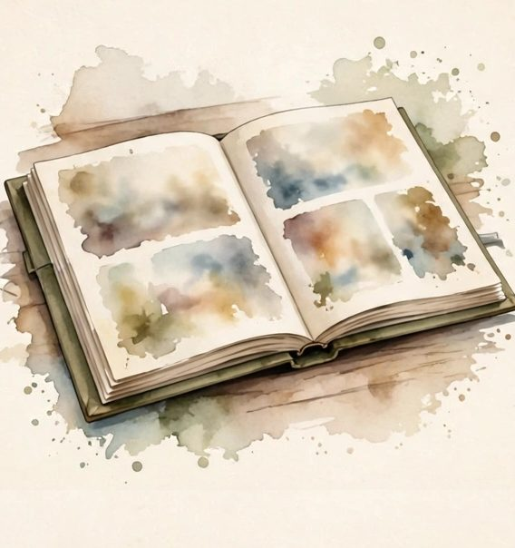
Альбом с фотографиями раскрыт на столе — первое дело выбирают маленьким и близким.
Первая страница не должна быть большой работой. Выберите самое маленькое и самое знакомое дело: одну тему, которую вы знаете наизусть и о которой рассказывать легко и приятно.
Маленькое дело хорошо тем, что его видно целиком. Вы быстро дойдёте до конца, разберётесь по пути, как устроен разговор с машиной, и не устанете на первой же попытке.
Большие замыслы никуда не денутся — они подождут своей очереди. Начать же стоит с того, что можно закончить за один спокойный вечер.
62Страница про ваш сад
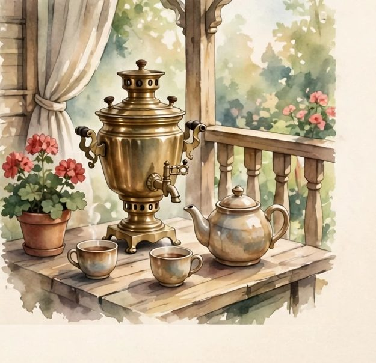
Чайник на веранде и две чашки — страница про сад пишется как рассказ за чаем.
Страница про сад — благодарное первое дело, потому что сад вы знаете лучше любой машины. Напишите в подсказке, что в нём растёт: яблони у забора, смородина вдоль дорожки, герань на окне дачного домика.
Добавьте несколько подробностей из жизни сада: когда цветёт сирень, где стоит скамейка, в каком углу прячется тень в жаркий полдень. Из таких подробностей и складывается настоящая, а не выдуманная страница.
В конце можно оставить место для фотографий разных времён года. Сад меняется, и страница сможет меняться вместе с ним — стоит только попросить.
63Страница про кота
Страница про кота — дело почти домашнее, и потому особенно удачное для начала. Расскажите машине, как его зовут, какой у него характер и какие привычки вызывают у вас улыбку.
Вот возможное начало подсказки: «Сделайте страницу про кота, который живёт у нас уже пять лет. Напишите, что он встречает меня у двери, спит на подоконнике и боится пылесоса».
Такая страница не требует ни знаний, ни подготовки — только вашего рассказа. А рассказ о том, кого любишь, даётся легко.
64Страница вашей улицы
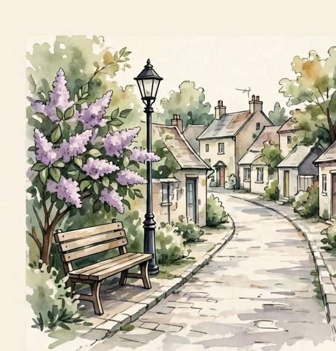
Улица тихого района: скамейка, сирень и фонарь — знакомое место для первой страницы.
Ваша улица — тоже достойный предмет для первой страницы. На ней есть дома, которые вы помните десятилетиями, деревья, посаженные при вас, и скамейка, где собираются соседи.
Расскажите машине об улице по порядку: как она называлась раньше и как называется теперь, что стоит в начале, а что — в конце, где был магазин и где — почта. Получится не просто страница, а маленькая летопись места.
Такой рассказ ценен сам по себе: многое из того, что вы помните, не записано больше нигде.
65Страница рецептов
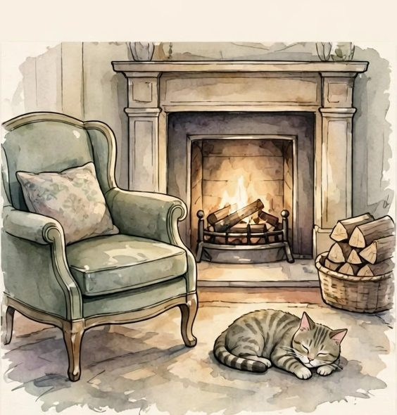
Печка, кресло и кот рядом — рецепты записывают в тепле и без спешки.
Страница рецептов начинается с одного-единственного блюда — того, которое у вас получается лучше всего и которое просят приготовить снова и снова. Не нужно собирать всю кулинарную книгу сразу.
Подсказка может звучать так: «Сделайте страницу с рецептом шарлотки, которую я пеку осенью, когда поспевают свои яблоки. Напишите сначала, что нужно из продуктов, а потом — по шагам, как готовить».
Позже к первой странице добавятся вторая и третья, и постепенно из них вырастет та самая книга рецептов, которую приятно передать детям и внукам.
66Заголовок — имя страницы
У каждой страницы есть заголовок — самая верхняя, крупная строка. Это имя страницы: по нему человек сразу понимает, о чём пойдёт речь дальше, ещё до первого абзаца.
Имя лучше давать простое и точное: «Мой сад», «Кот Барсик», «Улица, на которой я живу», «Шарлотка по осени». Длинные и хитрые названия ни к чему — ясность здесь важнее украшений.
Если готовое имя вам не нравится, попросите машину предложить несколько вариантов на выбор. Выбирать последнее слово всё равно останется за вами.
67Три абзаца для начала
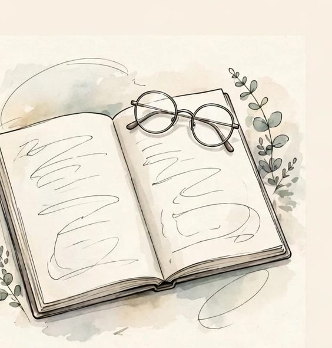
Раскрытая тетрадь с рецептом и очки сверху — три абзаца уже держат всю страницу.
Не стремитесь написать сразу много. Для начала странице вполне достаточно трёх абзацев: в первом — о чём она, во втором — главное, в третьем — чем всё заканчивается или что будет дальше.
Три абзаца легко сочинить, легко прочитать и легко поправить. Они задают странице строй, а всё остальное — подробности, списки, фотографии — добавится позже, когда захочется.
Попросите машину сделать именно так: три абзаца, не больше. Увидев их перед собой, вы сами почувствуете, куда страница хочет расти.
68Фотография к странице
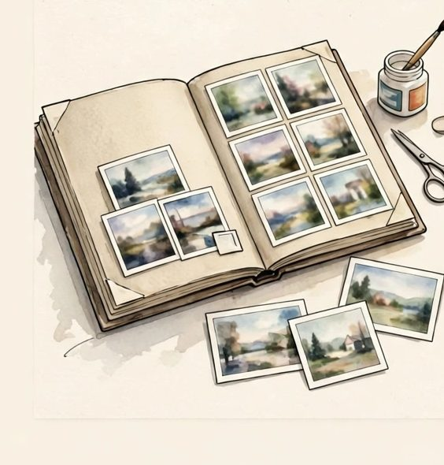
Фотографии, приклеенные в альбом, клей и ножницы рядом — снимок находит своё место.
Фотография оживляет страницу сильнее многих слов. Выберите один снимок — тот, который лучше всего передаёт суть дела: сад в цвету, кота на подоконнике, дом, где прошло детство.
Скажите машине, куда поставить фотографию: в начало страницы, рядом с каким абзацем, крупно или скромно, в углу. Она разместит снимок по вашему слову, а вы посмотрите и, если нужно, попросите подвинуть или уменьшить.
Не обязательно добавлять все фотографии сразу. Одна, выбранная со вкусом, часто говорит больше, чем десяток, поставленных впопыхах.
69Страница готова — что дальше
Итак, страница готова: у неё есть имя, несколько абзацев и, возможно, фотография. Прежде всего — не спешите её переделывать. Прочитайте её целиком, спокойно, как читали бы чужую, и отметьте про себя, что нравится, а что хотелось бы изменить.
Сохраните то, что получилось, даже если это пока черновик. Черновик — законное состояние любой работы: он позволяет вернуться завтра и продолжить с того же места.
А дальше можно показать страницу близкому человеку, можно оставить её себе на несколько дней, можно сразу начать следующую. Порядок выбираете вы.
70Адрес страницы: запишите его
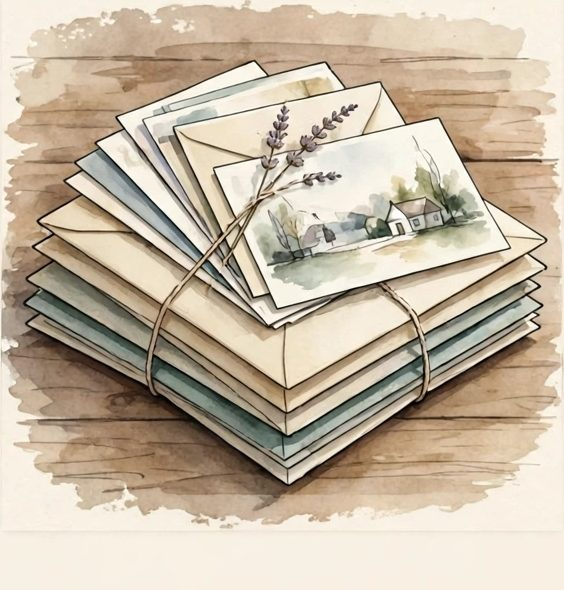
Конверты и открытки стопкой на столе — адрес страницы записывают, как адрес друга.
У каждой страницы в интернете есть свой адрес — строка из букв и знаков, по которой страницу находят. Адрес этот показывает браузер, то самое окно, через которое вы смотрите в интернет: строка обычно находится в самом верху экрана.
Запишите адрес вашей страницы на бумаге — в тетрадь, на закладку, на открытку, которую не жалко. Бумажная запись не зависит ни от памяти компьютера, ни от вашего настроения, и всегда окажется под рукой.
По этому адресу страницу сможете открыть и вы сами, и тот, кому вы его дадите: внук в другом городе или соседка из дома напротив. Записали — значит, не потеряли.
71Первая страница — не последняя
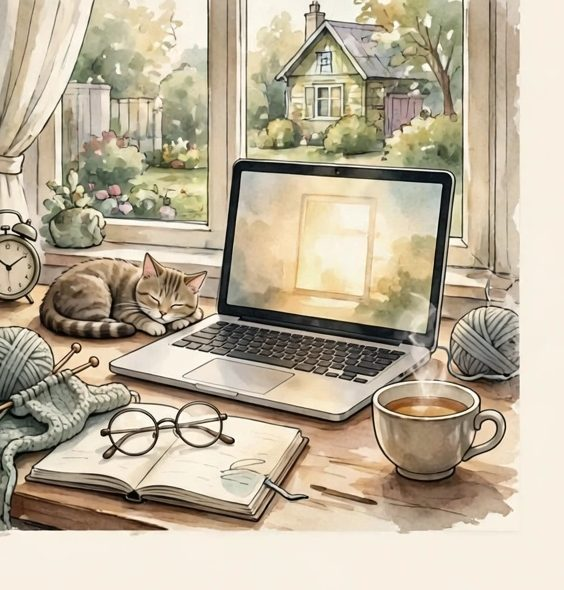
Будильник и чашка на утреннем столе — завтра будет новая страница, в своё время.
Первая страница важна не тем, что она совершенна, а тем, что она первая. Она доказывает главное: дело вам по силам, разговор с машиной освоен, а дальше — только практика и желание.
После первой страницы вторая даётся заметно легче. Вы уже знаете, как сочинить подсказку, как попросить об исправлении и как записать адрес, чтобы ничего не потерялось.
Поэтому не судите первый результат строго и не сравнивайте его с чужими, давно готовыми страницами. У каждой большой вещи было своё скромное начало.
72Маленькое дело сделано
Оглянитесь на пройденный путь: вы выбрали дело, рассказали о нём своими словами, увидели готовую страницу и записали её адрес. Это не «попытка» и не «тренировка» — это законченная работа, у которой есть результат.
Такие маленькие, доведённые до конца дела и составляют большую уверенность. Не громкие обещания, а тихий факт: захотел, сказал, сделал, сохранил.
Отдохните и похвалите себя — без громких слов, по заслугам. А следующее маленькое дело подождёт до завтра или до той минуты, когда вам снова захочется сделать что-нибудь своё.
73Не то — это нормально
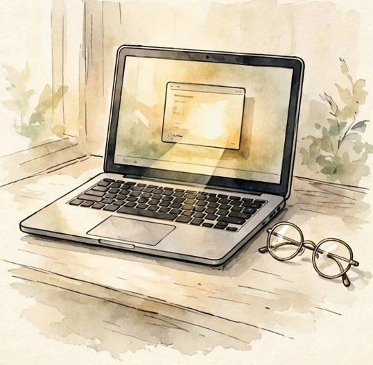
Ноутбук, чей экран светится мягко, и очки рядом — не тот результат тоже результат.
Рано или поздно машина сделает не совсем то, о чём вы просили: не тот цвет, не тот размер букв, лишнее слово в заголовке. Это не ваша неудача и не её каприз — это обычная часть всякой совместной работы.
Даже люди, слушая друг друга внимательно, понимают сказанное не с первого раза. Машине же можно спокойно объяснить, что именно пошло не так, — и она переделает.
Поэтому «не то» — не конец дела, а его середина. Именно с этого места начинается настоящая доводка страницы до того вида, который нужен вам.
74Скажите: крупнее
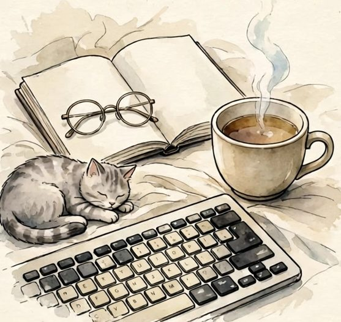
Клавиатура, чашка и очки на тетради крупным планом — попросить крупнее совсем просто.
Если буквы на странице оказались мелкими и читать их трудно, не миритесь с этим молча. Напишите машине коротко и прямо: «Сделайте крупнее». Можно уточнить: «Заголовок — крупнее, а обычный текст — чуть крупнее, чтобы читать без очков».
Такая просьба не требует объяснений и оправданий. Читать должно быть удобно именно вам, и мера удобства здесь — ваше зрение, а не чей-то вкус.
Посмотрите на результат. Если всё ещё мелко, скажите ещё раз, тем же словом: крупнее. Машина послушно сделает следующий шаг в ту же сторону.
75Скажите: светлее
Бывает, что страница получилась тёмной, сумрачной или, наоборот, блёклой. Лекарство здесь то же, что и в доме с окнами: добавить света. Напишите: «Сделайте светлее» — и, если хочется, поясните, с чем сравнить: «Как утром в кухне» или «Как бумага при дневном свете».
Слова о свете машина понимает хорошо, потому что за ними стоит ясное ощущение. Не нужно знать, как называются оттенки и краски, — достаточно вашего сравнения из жизни.
Если после исправления стало слишком ярко, скажите об этом следующей фразой. Свет, как и размер букв, настраивается постепенно, в несколько спокойных шагов.
Канцелярия „Вайб-кодинг"
Одна канцелярия принимает всю переписку этой страницы: вопросы, рассказы о первых страницах, просьбы объяснить ещё раз и помедленнее. Письма читаются в порядке поступления, и на каждое стараются ответить.
76Скажите: помедленнее
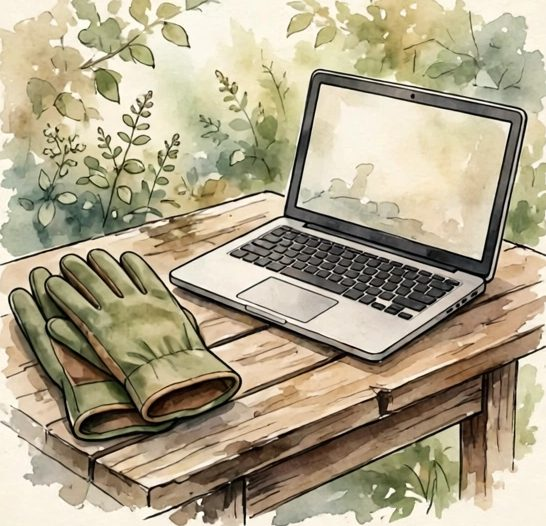
Садовые перчатки аккуратно лежат у ноутбука — медленный темп задаёт сам хозяин дела.
Иногда страница кажется слишком быстрой: что-то мелькает, строки сменяются одна другой, читать приходится в напряжении. В таком случае скажите: «Помедленнее» — и добавьте, что именно тревожит: «Пусть ничего не двигается, пока я читаю».
Спокойная, неподвижная страница — не недостаток, а достоинство для вдумчивого чтения. У вас есть полное право требовать именно такого темпа: дело делается для вас и под ваш ритм.
Если машина не сразу поняла, какое движение лишнее, назовите его своими словами: «Вот эта строка сверху пусть стоит на месте». Точность здесь рождается из простого указания пальцем.
77Скажите: уберите это
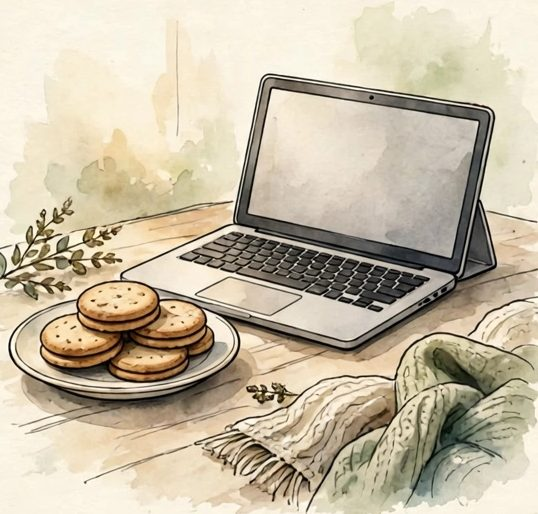
Тарелка с печеньем у ноутбука — лишнее со страницы убирают так же легко, как со стола.
На готовой странице почти всегда находится что-нибудь лишнее: повторяющаяся фраза, ненужная картинка, абзац не о том. Не нужно терпеть лишнее из вежливости — скажите: «Уберите это», и назовите, что именно: «Уберите второй абзац» или «Уберите картинку внизу».
Машина уберёт названное без споров и без вопросов о причинах. Страница от этого станет чище, а вы почувствуете, что распоряжаетесь здесь вы, а не она.
Если убранное захочется вернуть, это тоже возможно: попросите вернуть — и оно встанет на прежнее место. Удаление в черновике не бывает окончательным.
78Одно исправление за один раз
Когда исправлений накопилось несколько, не называйте их все сразу. Выберите одно — самое заметное или самое досадное — и попросите исправить только его. Дождитесь результата, рассмотрите страницу заново и только потом переходите к следующему.
По одному исправлению за один раз — правило, которое бережёт и ваше внимание, и точность машины. Смешав три просьбы в одной фразе, легко получить страницу, где исправлено не то и не так.
Работа от этого не замедлится, а, напротив, пойдёт ровнее: каждый шаг виден, каждая ошибка находится сразу, пока её нетрудно поправить.
79Покажите на примере: «как вот здесь»
Открытый ноутбук и раскрытая книга рядом — пример объясняет лучше длинных слов.
Бывает, что объяснить словами, чего именно хочется, труднее, чем показать. Тогда так и скажите: «Сделайте, как вот здесь», — и укажите на пример: другую страницу, фотографию, книгу или даже рисунок в тетради, если машина может его увидеть.
Пример говорит сразу о многом: о размере, о цвете, о расположении и о настроении. Одно «как вот здесь» заменяет целый абзац описаний и избавляет от недоразумений.
Не стесняйтесь ссылаться на примеры из собственной жизни. Страница, похожая на ваш любимый альбом или на вырезку из старого журнала, будет вам ближе любой модной новинки.
80Если совсем не то — начните сначала
Корзина с грибами и тетрадь на пне — иногда вернее отложить и начать заново.
Случается и так: исправление следует за исправлением, а страница всё дальше уходит от того, что вы задумали. В этом случае честнее признать вслух: получилось совсем не то. И — начать сначала, с новой подсказки.
Начать сначала не значит признать поражение. Это значит сберечь время и силы: новая страница с ясным рассказом часто рождается быстрее, чем доводится до ума неудачная.
Машина при этом не обидится и не вздохнёт устало. Для неё новый разговор — такая же обычная работа, а прежние попытки останутся позади, как черновики остаются в столе у писателя.
81Машина не обижается
Бывает, результат совсем не похож на то, что вы просили. Вы смотрите на страницу и думаете: «Что же я сказал не так?» Не спешите винить себя: разговор с машиной — это не экзамен, и неправильных ответов в нём нет.
Машина не обижается. У неё нет настроения, которое можно испортить, и нет самолюбия, которое можно задеть. Десятая просьба исправить она выслушает так же спокойно, как первую.
Поэтому не нужно извиняться и не нужно подбирать слова поделикатнее. Скажите прямо: «Это не то». Прямота здесь — не грубость, а обычная рабочая честность, и машина понимает её лучше всего.
82Три попытки — и перерыв
Перерыв: закрытый ноутбук, чашка чая и кот у окна.
Есть простое правило, которое бережёт и силы, и хорошее настроение: три попытки — и перерыв. Если после третьего исправления страница всё ещё не та, дело, скорее всего, не в вас и не в машине. Дело в том, что глаза устали смотреть на одно и то же.
Закройте ноутбук. Налейте чаю, посмотрите в окно, пройдитесь по комнате. Перерыв — не отступление, а часть работы: именно в тишине часто становится ясно, какая фраза всё исправит.
Вернувшись, вы, возможно, увидите, что осталось поправить одну мелочь. А если не увидите — ничего страшного: страница подождёт до завтра. Она никуда не убежит, а вы придёте к ней со свежей головой.
83Запишите, что получилось
Тетрадь, где записано, что получилось, и ручки в стакане рядом.
Когда страница наконец стала такой, как вы хотели, остановитесь и запишите в тетрадь, какими словами вы этого добились. Не весь разговор — только ту фразу, после которой всё получилось. Запись займёт минуту, а сэкономит вам когда-нибудь целый вечер.
Такие записи постепенно складываются в ваш собственный небольшой справочник. В нём не будет ни одного чужого слова: только ваши просьбы и то, что на них ответила машина. Это и есть опыт, записанный вашей рукой.
Заодно отметьте дату и название страницы. Через месяц приятно перелистать тетрадь и увидеть, как много уже сделано. Умение, которое можно перелистать, перестаёт казаться чудом — оно становится вашим ремеслом.
84Неточность — часть ремесла
Ни одно дело не начинается с точных слов. Плотник сначала прикидывает на глаз, портной сначала намётывает, садовод сначала смотрит, как ляжет тень. Точность приходит не до работы, а внутри неё — от прикосновения к материалу.
С машиной то же самое. Первая фраза почти всегда приблизительна, и это не недостаток, а законный первый шаг. Вы говорите примерно — машина делает примерно — вы смотрите и уточняете. Так устроено любое ремесло, и ваше не исключение.
Поэтому не ждите от себя слов, которые сразу попадут в цель. Позвольте себе говорить неточно, смотреть внимательно и поправлять спокойно. В этом круге — «сказал, посмотрел, поправил» — и рождается страница, которой вы останетесь довольны.
85Страница семейных фотографий
Фотографии трёх поколений в рамках на комоде.
В каждом доме есть коробка или альбом, которые открывают редко и бережно. Фотографии лежат там годами, а видят их только те, кто пришёл в гости. Страница семейных фотографий меняет это тихо и просто: снимки оказываются там, где их может открыть каждый из близких — хоть из другого города, хоть из другой страны.
Не нужно выкладывать всё сразу. Начните с десяти фотографий, которые вы любите больше других, и подпишите каждую: кто на ней, где снято, какой это был год. Подпись, сделанная вашей рукой, дороже самого снимка: она сохраняет то, чего фотография не показывает.
Такую страницу приятно пополнять понемногу, по одному снимку в неделю. Внуки будут заглядывать на неё чаще, чем вы думаете. А семейный архив перестанет зависеть от одной коробки в шкафу.
86Книга рецептов для внуков
Раскрытая книга рецептов, половник и банка варенья.
Есть блюда, которые в семье готовят «как у бабушки», но записать их толком никто не успел. Щепотка, на глаз, до готовности — всё это понятно тому, кто стоит у плиты рядом. Книга рецептов на странице позволяет записать не только граммы и минуты, но и эти самые «на глаз» — вашими словами, с пояснениями.
Начните с одного рецепта, самого любимого в семье. Расскажите машине, как вы его готовите, — она аккуратно расставит по порядку: что нужно, что за чем класть, на что обратить внимание. Добавьте фотографию готового блюда, если она есть, и одну фразу о том, когда это блюдо появлялось на вашем столе.
Постепенно, рецепт за рецептом, сложится книга, которую внуки откроют уже на своей кухне. И ваш голос — спокойный, точный, с советом в нужном месте — будет стоять рядом с ними у плиты.
87Страница для клуба вашего дома
Почти в каждом доме есть свой маленький клуб: шахматисты у подъезда, кружок вязания, соседи, которые вместе следят за цветником. Такому клубу страница полезна самым простым образом: на ней можно написать, когда встречаемся, что принести и что было в прошлый раз.
Сделать её несложно. Попросите машину: «Сделай спокойную страницу для нашего кружка: название, день и час встреч, список, кто что приносит, и место для новостей». Потом покажите страницу соседям и запишите её адрес на листке у доски объявлений.
Страница не заменит самих встреч — она лишь поможет им не рассыпаться. Кто-то забудет день — посмотрит на странице. Кто-то уедет на дачу — прочитает, что обсуждали без него. Маленькая помощь, а клуб живёт дольше.
88Мемуары — глава за главой
Старый стул, плед и книга — уголок, где пишутся воспоминания.
Большую книгу писать страшно, а одну маленькую главу — нет. В этом весь секрет мемуаров, сделанных в разговоре с машиной: не «вся жизнь», а один эпизод. Дом, где вы выросли. Первая работа. Один летний день, который помнится до сих пор.
Расскажите этот эпизод машине так, как рассказывали бы за столом, — не торопясь, с отступлениями. Она бережно соберёт рассказ в текст и покажет вам. Вы поправите имена, даты и то, что память расставила по-своему. Текст останется вашим: машина здесь только переписчик, аккуратный и терпеливый.
Глава за главой, без сроков и обязательств, складывается книга, которую не напишет никто, кроме вас. Потому что эту жизнь прожили вы — и рассказать её можете только вы.
89Страница для рукоделия
Клумба у дома, лейка и скамейка с блокнотом.
Вязание, вышивка, шитьё — работы, которые обычно лежат в шкафу и показываются только близким. Страница для рукоделия позволяет разложить их как на тихой выставке: фотография каждой вещи, несколько слов о ней — из какой пряжи, по какой выкройке, для кого связано.
Попросите машину сделать страницу спокойной, с крупными фотографиями и короткими подписями. Не торопитесь фотографировать всё сразу: две-три вещи для начала — вполне достойное начало. Остальные добавляйте по мере настроения.
Такая страница радует дважды. Сначала — когда вы сами видите свои работы собранными вместе и аккуратно подписанными. Потом — когда их видят дети и внуки и вдруг понимают, сколько в этих вещах труда и вкуса.
90Варенье и вязание: как у соседей
Иногда рукоделия и заготовок становится больше, чем нужно одному дому. Лишняя банка варенья, ещё одни вязаные носки, рассада, которой некуда деваться. Соседи в таких случаях делают просто: выставляют к подъезду или пишут на доске объявлений — спокойно, без громких слов.
Страница может стать такой же доской, только её увидят чуть шире — знакомые знакомых, жители соседних домов. Напишите честно и коротко: что именно есть, сколько, из чего сделано и как связаться. Фотография банки или пары носков скажет больше любых описаний.
Никаких обещаний здесь не нужно — ни себе, ни другим. Это не дело и не заработок, а обычный соседский обмен: у одного лишнее, другому как раз нужно. Страница лишь помогает этим двоим найти друг друга.
Канцелярия „Вайб-кодинг"
Одна канцелярия принимает всю переписку этой страницы: вопросы, рассказы о первых страницах, просьбы объяснить ещё раз и помедленнее. Письма читаются в порядке поступления, и на каждое стараются ответить.
91Генеалогия: древо семьи
Рисунок дерева в рамке на стене — древо семьи.
Кто был отцом деда? В каком городе родилась прабабушка? Такие вопросы возникают за семейным столом — и чаще всего остаются без ответа, потому что помнить всё не может никто. Страница с древом семьи собирает то, что вы знаете, в одном месте и в наглядном порядке.
Начните с себя и двигайтесь вверх: родители, деды и бабушки, дальше — кого помните. Имя, годы жизни, место, одна строка о человеке — этого достаточно для начала. Машина расставит имена по поколениям и покажет древо целиком, чтобы вы могли проверить и поправить.
Пустые ветки — не беда, а приглашение: будет повод позвонить родственникам и спросить. Так древо растёт не только вверх, но и вширь — через разговоры, ради которых оно и затевалось.
92Страница для дачного товарищества
Стол, тетрадь, чашка чая и очки — всё на своём месте.
У каждого дачного товарищества есть новости, о которых узнают не все: когда включат воду, когда будет собрание, кто чинит общую дорогу. Обычно это висит на листке у сторожки — пока листок не смоет дождь. Страница в интернете дождя не боится.
На ней можно держать самое нужное: объявления председателя, расписание, телефон электрика и сторожа, короткие итоги собраний. Попросите машину сделать страницу простой и крупной, чтобы её было удобно читать и с телефона, и с домашнего компьютера.
Адрес страницы запишите на той же доске у сторожки и передайте соседям по участкам. Постепенно товарищество привыкнет заглядывать на страницу раньше, чем идти к доске. Это мелочь — но из таких мелочей складывается порядок.
93Письма, которые не потеряются
Бумажные письма хранят в коробках, и коробки иногда теряются при переездах. А есть письма, терять которые особенно жалко: от родителей, от друзей юности, от тех, кого уже нет. Страница — тихая, только для своих — может стать для них надёжным домом.
Не нужно перепечатывать всё подряд. Выберите несколько писем, самых дорогих, сфотографируйте их или перескажите машине своими словами, с датой и именем отправителя. Машина аккуратно соберёт страницу, где каждое письмо лежит на своём месте и подписано.
Доступ к такой странице можно оставить только семье — об этом просто скажите машине, и она подскажет, как это устроить. Главное другое: слова, которые вы берегли десятилетиями, больше не зависят от одной коробки.
94Страница памяти
Свеча памяти у фотографии в рамке.
О человеке, которого любили, хочется, чтобы помнили не только свои. Страница памяти — это тихий способ рассказать о нём тем, кто не был с ним знаком: каким он был, что умел, что любил, как звучал его смех. Без громких слов — просто по-человечески.
Начните с одной фотографии и одного рассказа. Попросите машину сделать страницу сдержанной: светлый фон, крупная фотография, текст без украшений. Потом можно добавить ещё снимки, даты, несколько воспоминаний разных людей — по одному, не спеша.
Такая страница не заменяет могилу и не заменяет память. Она просто даёт памяти адрес, по которому внуки и правнуки смогут прийти, когда захотят узнать, кем был этот человек.
95Подарок внуку: страница о нём
Детский рисунок, приколотый над столом с ноутбуком.
Есть подарки, которые не купишь: страница, сделанная бабушкой или дедушкой специально для внука. На ней — его фотографии от первого года до сегодняшнего дня, несколько тёплых историй о нём маленьком и слова, которые вслух сказать не всегда получается.
Сделать такой подарок просто: выберите фотографии, расскажите машине две-три истории — и попросите собрать страницу весёлую и светлую, в любимых цветах внука. День рождения, на который он откроет ссылку и увидит всё это, запомнится надолго.
А потом страница останется. Внук вырастет, а она будет лежать в интернете — сделанная вашими руками, вашим рассказом, вашей любовью. Мало какие подарки умеют так.
96Ваша жизнь — ваш материал
Всё, о чём рассказывал этот зал, сделано из одного и того же материала — из вашей жизни. Рецепты, фотографии, письма, воспоминания, сад, рукоделие: ничего не нужно придумывать и негде брать со стороны. Оно уже есть — в ваших шкафах, альбомах и памяти.
Машина не приносит материал — она только помогает придать ему форму страницы. Содержание всегда ваше, и в этом главная справедливость этого занятия: выигрывает не тот, кто быстрее печатает, а тот, кому есть что рассказать.
Поэтому не сравнивайте свои страницы с чужими, яркими и шумными. Ваша страница о вашем саде не станет лучше от чужих украшений. Она хороша тем, что сад — ваш, руки — ваши, а рассказ — такой, какой можете дать только вы.
97Шаг первый: сядьте удобно
Удобное кресло у окна, подушка и столик рядом.
Всё начинается не с компьютера, а со стула. Сядьте так, чтобы спине было удобно, а ногам — спокойно. Положите рядом очки, поставьте чашку чая в пределах руки. Торопиться некуда: это ваше время, и оно начинается с удобства.
Откройте ноутбук или включите компьютер и не трогайте пока ничего лишнего. Пусть экран просто светится перед вами, как окно, которое ещё не открыли. Посидите так несколько секунд — это тоже часть шага.
Шаг первый считается сделанным, когда вам удобно и спокойно. Всё остальное подождёт: хорошая работа не начинается с суеты.
98Шаг второй: откройте браузер
Ноутбук на подоконнике, а за окном — утро.
Браузер — это программа-окно, через которую смотрят интернет. У неё есть значок на экране: круглый шар, компас или лисичка — у кого как. Найдите этот значок глазами, не торопясь, и нажмите на него один раз.
Подождите, пока окно откроется полностью. Оно может открываться не сразу — это нормально, особенно если компьютер не новый. Не нажимайте второй раз: лишние нажатия только путают дело.
Когда перед вами открылась страница — с новостями, поиском или чем-то знакомым, — шаг второй сделан. Вы внутри интернета, и дальше нужен только разговор с машиной.
99Шаг третий: откройте разговор с машиной
Теперь нужно открыть то самое окно разговора, где вы пишете машине, а она отвечает. Если вы уже были там раньше, адрес может быть записан у вас в тетради — откройте тетрадь и наберите его внимательно, буква за буквой. Ошибка в одной букве — не беда: просто наберите заново.
Перед вами появится чистое поле для текста и, возможно, приветствие от машины. Не нужно отвечать на него длинно. Достаточно узнать место: вот сюда вы будете писать, а вот здесь появятся ответы.
Если окно не открылось или открылось что-то не то — не пугайтесь. Закройте лишнее, вздохните и попробуйте ещё раз, медленно. Шаг третий сделан, когда перед вами чистое поле, готовое принять вашу первую фразу.
100Шаг четвёртый: напишите одной фразой, что вы хотите
Одна строка на чистом листе — и ручка рядом.
Нажмите в чистое поле, чтобы появился мигающий курсор, и напишите одну фразу о том, что вы хотите. Одну — не абзац и не список. Например: «Сделай страницу про мой сад». Или: «Сделай страницу с рецептом шарлотки».
Не старайтесь написать правильно с первого раза и не ищите особых слов. Пишите так, как сказали бы человеку, который сидит рядом и готов помочь. Если фраза получилась длинной — ничего, но постарайтесь, чтобы просьба в ней была одна.
Перечитайте написанное один раз, медленно. Совпадает с тем, что вы хотели? Тогда фраза готова. Пока не нажимайте ничего — отправка будет следующим шагом, и у неё будет своё спокойное время.
101Шаг пятый: нажмите «отправить»
Ноутбук, компьютерная мышь и чашка рядом в мягком свете.
Фраза написана и перечитана. Осталось самое простое движение: найдите рядом с полем текста кнопку отправки — обычно это стрелка или надпись «отправить» — и нажмите на неё один раз. Один раз, спокойно, без повторных нажатий.
После нажатия на экране что-то начнёт происходить: появится ваш текст, а под ним — признаки того, что машина думает. Это может занять несколько секунд, иногда дольше. Ничего не трогайте в это время и не переживайте: думает — значит, работает.
Нажатая кнопка — маленький, но настоящий рубеж. До неё страница существовала только в ваших мыслях, после неё — уже начала делаться. Шаг пятый сделан в тот момент, когда ваша фраза ушла к машине.
102Шаг шестой: рассмотрите, что получилось
Машина ответила — и теперь ваша очередь смотреть. Не читайте ответ на бегу и не ищите сразу недостатки. Сначала просто рассмотрите то, что получилось, целиком: заголовок, текст, фотографии, как всё расположено.
Прокрутите страницу вниз медленно, до самого конца, и вернитесь обратно. Спросите себя о главном: похоже ли это на то, что вы себе представляли? Что обрадовало? Что хочется изменить? Запоминать всё не нужно — достаточно одного-двух впечатлений.
Этот шаг — самый приятный во всей работе, и его часто пропускают из торопливости. Не пропускайте. Вы заказчик, а заказчик имеет полное право сначала как следует рассмотреть сделанное.
103Шаг седьмой: скажите одно исправление
Две чашки и ноутбук в вечернем свете — время спокойного разговора.
Вы рассмотрели страницу и заметили то, что хочется поправить. Выберите из замеченного что-то одно — самое заметное или самое простое. Только одно: не два, не список. Например: «Сделай заголовок крупнее». Или: «Убери эту фотографию».
Напишите это исправление в поле разговора той же спокойной фразой, что и первую просьбу. Не нужно объяснять, почему вы так решили: машина не спорит и не просит обоснований. Короткое и ясное исправление понимается лучше длинного.
Отправьте фразу тем же нажатием, что и раньше. Одно исправление за один раз — правило, которое бережёт и страницу, и ваши нервы: вы всегда будете знать, что именно изменилось и от какой вашей фразы.
104Шаг восьмой: посмотрите ещё раз
Стол, ноутбук и первые лучи утра.
Машина внесла исправление — посмотрите на страницу ещё раз, так же неспешно, как в первый раз. Сначала найдите то место, которое просили изменить: стало ли так, как вы хотели? Иногда машина понимает фразу чуть иначе, и это видно сразу.
Если исправление получилось — хорошо. Если получилось наполовину — скажите ещё одну фразу, только об остатке. Если стало хуже, чем было, так и напишите: «Верни, как было». Возврат назад — законное движение, а не поражение.
Второй взгляд обычно спокойнее первого: вы уже знаете страницу и видите её увереннее. Часто именно на этом шаге приходит тихая мысль: «А ведь получилось». Запомните её — она честно заработана.
105Шаг девятый: запишите адрес вашей страницы
Когда страница готова в том виде, который вас устраивает, у неё есть свой адрес — строка, по которой её находят в интернете. Этот адрес нужно записать, и записать не в компьютере, а в вашей тетради, ручкой. Компьютеры меняются, а тетрадь лежит на своём месте.
Попросите машину показать адрес вашей страницы и перепишите его внимательно, знак за знаком. Если в адресе есть черточки и точки — перепишите и их: в адресах важна каждая мелочь. Рядом напишите, что это за страница и какого числа вы её сделали.
Записанный адрес — это ключ от вашей работы. Потерять страницу, у которой записан адрес, почти невозможно. Шаг девятый короткий, но именно он превращает «где-то в интернете» в «вот здесь, у меня записано».
Канцелярия „Вайб-кодинг"
Одна канцелярия принимает всю переписку этой страницы: вопросы, рассказы о первых страницах, просьбы объяснить ещё раз и помедленнее. Письма читаются в порядке поступления, и на каждое стараются ответить.
106Шаг десятый: покажите тому, кого любите
Раскрытая книга, а в ней — фотография вместо закладки.
Страница, которую никто не видел, — как письмо, которое не отправили. Пришло время показать её тому, кого вы любите: внуку, дочери, подруге, соседу по даче. Можно отправить адрес сообщением, а можно просто открыть страницу при встрече и дать посмотреть.
Не ждите от первого зрителя разбора и советов. Скорее всего, он просто обрадуется — и тому, что страница есть, и тому, что сделали её вы. Примите эту радость без отговорок «да там ничего особенного»: особенное там есть, и зритель его видит лучше вас.
Если зритель захочет такую же страницу себе — это лучший из возможных отзывов. Улыбнитесь и скажите: «Научу». Теперь вы и правда можете научить.
107Шаг одиннадцатый: отдохните
Плед на кресле, кот и тихий вечерний свет.
Работа сделана, страница показана, адрес записан. Теперь — отдых, и он тоже входит в план, а не случается, если останутся силы. Закройте ноутбук. Отложите тетрадь. Встаньте из-за стола.
Отдых после сделанного дела — особенный: в нём нет тревоги незавершённости. Можно пить чай, глядя в окно, и знать, что в интернете лежит страница, которой утром ещё не было, а теперь она есть — и сделали её вы.
Не садитесь доделывать «ещё чуть-чуть» в тот же вечер. Завтра страница будет на месте, а сегодня пусть будет просто хороший вечер. Шаг одиннадцатый соблюдается строго: отдохнуть — значит отдохнуть.
108Шаг двенадцатый: в другой день начните следующее маленькое дело
В другой день — не обязательно завтра, а когда захочется — вы вернётесь за стол, и всё будет уже знакомо. Удобный стул, браузер, окно разговора. Только теперь вы не новичок: у вас есть готовая страница, записанный адрес и тетрадь, в которой отмечено, что получилось.
Новое дело пусть снова будет маленьким. Ещё один рецепт. Ещё одна глава воспоминаний. Ещё одна фотография в семейный альбом. Величина дела не имеет значения — имеет значение, что оно следующее, а не последнее.
Так, шаг за шагом, по одному маленькому делу, складывается то, что со стороны выглядит большим: ваш собственный уголок в интернете. Он не построен за день. Он вырос — а выросшее всегда крепче построенного наспех.
109Что меняется
Рассвет за окном, а на столе — ноутбук и чашка.
Когда человек, давно привыкший только смотреть интернет, начинает в нём делать, меняется не интернет — меняется его собственное место в нём. Раньше он был гостем в чужих домах: заходил, читал, уходил. Теперь у него есть свой дом, пусть маленький, — со своим адресом и своими фотографиями на стенах.
Меняется и разговор с самим собой. Вопрос «смогу ли я» постепенно заменяется вопросом «что бы мне ещё сделать». Это два очень разных вопроса, и второй из них гораздо моложе первого.
А ещё меняется взгляд окружающих — но это, пожалуй, следствие, а не цель. Цель скромнее и важнее: знать, что твои руки и твои слова по-прежнему умеют создавать то, чего вчера не существовало.
110Человек, который много видел
Дорога между дачами ранним утром.
Есть вещи, которым нельзя научить двадцатилетнего, сколько ни объясняй. Терпение. Мера. Умение отличить главное от суеты. Всё это приходит только с годами — с работой, семьёй, потерями и радостями, которые нельзя пересказать, можно только прожить.
И вот выясняется, что именно эти вещи нужнее всего в работе с машиной. Машина быстра, но меры не знает. Машина умеет всё сразу — и потому не умеет главного. Человек, который много видел, приносит в эту работу то, чего в ней не хватает: глубину и вкус.
Поэтому ваш возраст в этом занятии — не препятствие, которое надо преодолеть, а богатство, которое надо вложить. Страница, сделанная человеком с большой жизнью за плечами, отличается от прочих так же, как письмо отличается от объявления.
111Тихая гордость
Есть гордость громкая — с трибунами и объявлениями; о ней здесь речи нет. Есть другая: тихая, домашняя. Она приходит вечером, когда вы вспоминаете день и знаете, что в нём было дело, сделанное от начала до конца вашими руками и вашей волей.
Тихая гордость ни с кем не соревнуется. Ей не нужны зрители, сравнения и чужие отметки. Она просто лежит в душе ровным тёплым слоем и говорит: «Я ещё могу. Я ещё делаю».
Берегите её и не обесценивайте словами «да что там, пустяки». Страница, которую вы сделали, — не пустяк. Это след вашей работы, и гордиться им — не нескромно, а справедливо.
112Ваш опыт — теперь и в сети
Сад после дождя, капли на листьях.
Раньше ваш опыт жил в разговорах: за столом, по телефону, на скамейке у подъезда. Разговоры прекрасны, но у них есть граница — они кончаются, когда расходятся собеседники, и остаются только в памяти тех, кто слышал.
Теперь у опыта появился второй дом. Рецепт записан — и его прочитают через десять лет. Воспоминание собрано в главу — и его откроет правнук. Фотография подписана — и никто уже не спросит, кто этот молодой человек у реки.
Это не значит, что разговоры обесценились. Наоборот: страницы дают им продолжение. Рассказ, который раньше звучал один вечер, теперь можно перечитать — и снова о нём поговорить.
113Разговор с внуками на равных
Две чашки на веранде, а за ними — сад.
Внуки выросли в интернете, как в родном городе: они там не гости, а уроженцы. Обычно это разделяет поколения — у старших свой берег, у младших свой. Но когда у вас появляется собственная страница, между берегами возникает мост.
Разговор меняется сам собой. Внук рассказывает, что сделал он; вы показываете, что сделали вы. Он может подсказать вам приём, вы можете показать ему, как выглядит настоящий рассказ. Это уже не «помоги бабушке с компьютером», а разговор двух людей, у каждого из которых есть своё дело.
Такие разговоры дорогого стоят. Они не требуют повода и не превращаются в отчёт о здоровье. У вас появляется общая тема — а общие темы, как известно, и держат семью ближе любых обязательств.
114Не скорость, а глубина
Интернет любит скорость: быстрее, новее, громче. Не обязательно принимать эти правила, входя в него со своей страницей. Ваша страница может жить в другом времени — медленном, где важнее не опередить, а досмотреть и додумать.
Глубина — это когда в коротком тексте всё на месте и ничего лишнего. Когда фотография выбрана одна, но та самая. Когда воспоминание рассказано не в спешке, а так, как оно заслуживает. Машина умеет быстро, но глубину в работу приносите вы — из своей жизни, а не из её возможностей.
Поэтому не измеряйте себя чужими мерками. Один человек делает десять страниц в день и не помнит ни одной. Вы делаете одну в месяц — и она остаётся. Вопрос, что ценнее, каждый решает сам; эта страница написана для тех, кто решил в пользу глубины.
115Что сказать тем, кто сомневается
Скамейка у дома, а на ней — книга и очки.
Рано или поздно кто-нибудь из знакомых скажет: «В нашем возрасте уже поздно учиться такому». Скажите ему спокойно, без спора: поздно — это когда неинтересно. А пока интересно, ничего не поздно; возраст здесь вообще ни при чём.
Можно показать свою страницу — не как доказательство, а как приглашение. И рассказать честно: что первый раз было непривычно, что машина не сердится и не торопит, что начать можно с одной фотографии и одной фразы. Честный рассказ убеждает лучше любых уговоров.
А если человек всё равно откажется — не настаивайте. У каждого свой срок для каждого дела. Возможно, он вспомнит ваш разговор через полгода, сидя у окна с чашкой чая, — и тогда его первая страница начнётся с вашей.
116Страница — это след
След на дорожке сада в утреннем свете.
След — это то, что остаётся после шага. Человек прошёл по дорожке утром — и след виден ещё какое-то время, потом его смоет дождь. Страница в интернете устроена долговечнее: она остаётся и после того дня, когда была сделана, и после многих других дней.
В этом нет ничего торжественного или страшного. Это просто свойство бумаги нового времени: написанное не выцветает, фотография не желтеет, адрес не теряется. Ваши слова и снимки оказываются устроены надёжнее, чем в коробке на антресолях.
Какой след оставить — решаете только вы. Страницу о саде, главу воспоминаний, рецепт для внуков. Маленький след или большой — не важно. Важно, что он ваш, поставленный обдуманно и по доброй воле.
117Вопросы и ответы
«А если я что-нибудь нажму не туда и всё испорчу?» — спрашивают чаще всего. Ответ короткий: не испортите. Страницу можно переделать, разговор можно начать сначала, а сам компьютер от ваших фраз не ломается: машина только делает текст и картинки по вашим словам и показывает их вам.
«У меня нет ни одного технического слова, я не знаю, как называются все эти вещи». И не нужно. Вещи здесь называются обычными словами: страница, фотография, заголовок, адрес. Если встретится незнакомое слово, спросите саму машину: «Объясни простыми словами» — объяснение простыми словами она даёт охотно.
«А что, если у меня не получится ничего хорошего?» Получится то, что получится с первого раза у всех: черновик. Черновик — не провал, а начало; его рассматривают, поправляют и понемногу доводят до страницы, которой не стыдно поделиться. И последнее: «Не поздно ли мне?» — Не поздно. Единственный настоящий срок в этом деле — ваше собственное желание, а оно, раз вы дочитали до этого места, у вас есть.
118Мелкий шрифт, честно
Стол у окна: тетрадь, ручка, ноутбук и чашка чая — всё готово к новому дню.
Теперь — мелким шрифтом, но честно и без утайки. Эта страница — страница-концепция большого дома страниц, её «идея в полный рост»: спокойное объяснение одного занятия, написанное для чтения и размышления. Это не школа и не курс: здесь никого не учат по программе, не выдают заданий и не проверяют успехи.
Здесь ничего не продаётся: ни сама страница, ни то, о чём на ней рассказано. Здесь нет обещаний — ни заработка, ни успеха, ни лёгких результатов. Кто обещает такое в интернете, тому верить не стоит; эта страница устроена иначе и говорит об этом прямо.
Ещё два честных предупреждения. Машина иногда ошибается: путает даты, придумывает лишнее, понимает фразу не так. Поэтому всё важное — имена, числа, сведения о здоровье и деньгах — проверяйте у человека, а не у машины. И последнее: ваши рассказы, воспоминания и фотографии принадлежат вам. Делиться ими или нет, и с кем именно, — решаете только вы.
119Что дальше — на ваш выбор
Окно настежь, занавеска колышется, за окном — сад.
Что будет дальше с вашим новым умением — не знает никто, и это хорошая новость. Можно остановиться на одной странице — она уже сделана и уже ваша. Можно делать по странице в месяц для семьи. Можно, увлёкшись, собрать целый дом страниц: сад, рецепты, письма, воспоминания — под одной крышей.
Никто не стоит над вами с планом и не торопит к следующему уровню. Здесь нет уровней. Есть только ваше желание и ваше время, распоряжаться которыми вы умеете лучше любого советчика.
Выберите то, что по душе, — или не выбирайте ничего и просто приходите иногда посмотреть на уже сделанное. И это тоже законный выбор. Страница будет на месте, тетрадь — на столе, а решение — за вами, как и было всегда.
120Последняя страница — и первая
Вот и последняя страница этого долгого спокойного рассказа. Вы прошли десять залов: от «вы уже умеете» — через первый разговор и первую страницу — до тихой гордости человека, который делает сам. Если вы только читали, а не делали, — ничего страшного: чтение тоже было делом, и оно закончено честно.
Но вы, наверное, заметили: последняя страница устроена как первая. Тот же стол у окна, тот же чай, та же чистая строка, ждущая вашей фразы. Всё, чему учил этот рассказ, помещается в одно предложение: сядьте удобно и напишите, что вы хотите.
А дальше вы знаете. Написать фразу. Посмотреть. Поправить одно. Записать адрес. Показать тому, кого любите. Эта — последняя — страница закрывается. Ваша первая открывается.
Канцелярия „Вайб-кодинг"
Одна канцелярия принимает всю переписку этой страницы: вопросы, рассказы о первых страницах, просьбы объяснить ещё раз и помедленнее. Письма читаются в порядке поступления, и на каждое стараются ответить.